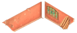
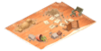
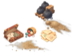
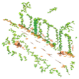
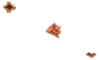
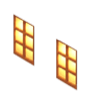
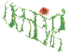
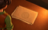
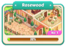
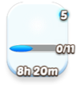

한눈에면적 = 파일 크기(원본) · 칸을 누르면 그 카테고리로
파일 크기 = 프로젝트 폴더에 있는 원본 그대로의 크기. 트리맵 면적, 막대 길이, 목록 정렬 기준이다.
항목 값은 그 항목 하나만 load 할 때 끌려오는 파일 전부(공용 포함)의 합이라, 항목끼리 겹치는 파일은 항목마다 들어 있다.
공용 텍스처 = 두 항목 이상이 같이 끌고 오는 아틀라스·텍스처. 한 번 올라가면 다음 항목엔 추가 비용이 0 이라 어느 카테고리에도 넣지 않고 「공용 텍스처」 칸에 따로 모았다.
값 칸의 작은 「메모리」는 같은 항목을 화면에 올렸을 때의 텍스처 메모리다. 파일이 작아도 메모리가 큰 항목(압축이 잘 되는 큰 그림)이 있으니 같이 본다.
막대 길이 기준은 카테고리 안 최대값이고, 행을 누르면 파일이 큰 텍스처가 펼쳐진다.
칸을 다 더하면 파일 83.7MB, 전체는 파일 72.4MB · 메모리 574.0MB다.
카테고리가 한꺼번에 올라가는 것은 아니라서 각 섹션의 「언제」와 같이 봐야 한다.
영역별1-1~1-5 · 큰 숫자 = 파일 크기(원본) · 메모리는 작은 글씨 · 행을 누르면 태스크
1-1~1-5 합계 파일 12.8MB공통 배경 포함 14.1MB메모리로는 104.8MB (배경 포함)태스크 82개
영역 1-1태스크 7 · 수선 2 · 택1 5 · 고유 1.6MB파일2.4MB메모리20.7MB누적 파일 2.4MB
영역 1-2태스크 15 · 수선 4 · 택1 11 · 고유 1.8MB파일2.7MB메모리18.7MB누적 파일 4.2MB

70009 · Off the Wall2일차 · 수선 · bundles/area_courtyard/70009.prefab파일0.6MB메모리5.0MB
70008 · Creaky Floors2일차 · 수선 · bundles/area_courtyard/70008.prefab파일0.1MB메모리1.2MB영역 1-3태스크 20 · 수선 7 · 택1 13 · 고유 1.8MB파일2.7MB메모리20.2MB누적 파일 6.0MB

70024 · Clear the Floor4일차 · 수선 · bundles/area_courtyard/70024.prefab파일0.1MB메모리0.8MB
영역 1-4태스크 17 · 수선 6 · 택1 11 · 고유 2.2MB파일2.8MB메모리14.8MB누적 파일 8.2MB

70073 · Repair the Roof9일차 · 수선 · bundles/area_courtyard/70073.prefab파일0.5MB메모리4.1MB 70068 · First Outdoor Table9일차 · 택1 · bundles/area_courtyard/70068.prefab파일0.1MB메모리0.6MB
70068 · First Outdoor Table9일차 · 택1 · bundles/area_courtyard/70068.prefab파일0.1MB메모리0.6MB
70058 · Light the Window8일차 · 수선 · bundles/area_courtyard/70058.prefab파일10KB메모리0.2MB
영역 1-5태스크 23 · 수선 5 · 택1 18 · 고유 4.6MB파일5.5MB메모리33.9MB누적 파일 12.8MB
 70102 · Second Outdoor Table12일차 · 택1 · bundles/area_courtyard/70102.prefab파일0.2MB메모리0.7MB
70102 · Second Outdoor Table12일차 · 택1 · bundles/area_courtyard/70102.prefab파일0.2MB메모리0.7MB공통 배경area.prefab 의 Background · 모든 영역이 같이 씀파일1.3MB메모리24.9MB어느 영역이든 진입 때
이 섹션은 다른 섹션과 달리 파일 크기가 큰 숫자이고 막대 길이다. 메모리는 값 칸 아래 작은 글씨다.
파일 크기 = 프로젝트 폴더에 있는 원본 그대로의 크기다. 빌드 산출물이 아니라서, 빌드에서 텍스처 압축·번들 묶음을 거친 실제 다운로드 크기와는 다르다.
영역 하나 = bundles/area_courtyard 의 그 영역 태스크 프리팹 전부 + area.prefab 의 그 소구역 노드(덮개·수선 전 그림).
소속은 area.prefab 노드 기준이고 시트 main_task.area_id 와 전부 맞는다.
수선택1에리어 레이어
같은 파일을 여러 태스크가 쓰면 영역 안에서 한 번만 센다 — 그래서 펼친 태스크 값의 합보다 영역 값이 작을 수 있다.
고유 = 그 영역 말고는 아무 항목도 안 쓰는 파일. 누적 = 첫 영역부터 그 영역까지 합집합.
채팅·마을 캐릭터·손님은 영역 소속이 프리팹에 없어 여기 넣지 않았다(각 카테고리에서 본다).
데코레이션수선·택1 프리팹 · 파일 큰 순 · 상위 30개
파일 13.2MB|메모리(전부 올리면) 79.9MB|항목 87개 · 언제: 마을 진입 때 안 깬 수선 전부(신규 생성 제외) · 택1은 깰 때
A12(SM-A125N) 기준 추정빌드 기준 받는 크기 4.8MB (정확 1%), 받기 79초 (63KB/s) / 23초 (220KB/s), 올리기 0.6-3.4초 (전부 올리면 메모리 기준)
꾸미기 오브젝트. 수선 전·후 그림과 애니가 프리팹 하나에 들어 있다.
70001영역 1-1 · 1일차 1번 · 수선 · Start with the Yard · 텍스처 43파일1.3MB메모리11.8MBA12 추정받기 13초 / 3.8초올리기 94-494ms, 빌드 0.8MB
bundles/area_courtyard/70001.prefab70091영역 1-5 · 11일차 3번 · 수선 · Clear the Records Office Vines · 텍스처 27파일1.2MB메모리6.6MBA12 추정받기 12초 / 3.5초올리기 53-278ms, 빌드 0.7MB
bundles/area_courtyard/70091.prefab70122영역 1-5 · 14일차 4번 · 택1 · Choose the Fountain · 텍스처 27파일0.9MB메모리5.2MBA12 추정받기 8.1초 / 2.3초올리기 41-217ms, 빌드 0.5MB
bundles/area_courtyard/70122.prefab70094영역 1-5 · 11일차 6번 · 수선 · Where It Leaked · 텍스처 35파일0.9MB메모리5.5MBA12 추정받기 8.4초 / 2.4초올리기 44-232ms, 빌드 0.5MB
bundles/area_courtyard/70094.prefabdecorate_01bundle/decorate · 텍스처 22파일0.8MB메모리3.5MBA12 추정받기 6.0초 / 1.7초올리기 28-145ms, 빌드 0.4MB
bundle/decorate/area_1_1/decorate_01.prefab70050영역 1-4 · 7일차 2번 · 수선 · Clear the Vines · 텍스처 24파일0.7MB메모리8.1MBA12 추정받기 7.8초 / 2.2초올리기 65-340ms, 빌드 0.5MB
bundles/area_courtyard/70050.prefab70023영역 1-2 · 3일차 8번 · 택1 · Workshop Wallpaper · 텍스처 30파일 +0.6MB메모리 +8.3MB원인: effectAtlas.pac (공용) 새로 끌고 옴 메모리 +3.5MB 파일 +0.5MB: bc2032ab 에리어 리번들(area_courtyard · area_station)... (참조 추가); 70023Atlas.pac 메모리 +3.3MB 파일 +0.05MB: bc2032ab 에리어 리번들(area_courtyard · area_station)...; 70009Atlas.pac (공용) 새로 끌고 옴 메모리 +1.5MB 파일 +0.07MB: bc2032ab 에리어 리번들(area_courtyard · area_station)... (참조 추가); 외 1건파일0.7MB메모리8.7MBA12 추정받기 8.2초 / 2.3초올리기 70-366ms, 빌드 0.5MB
bundles/area_courtyard/70023.prefab70089영역 1-5 · 11일차 1번 · 수선 · Clear the Square · 텍스처 27파일0.7MB메모리5.3MBA12 추정받기 7.4초 / 2.1초올리기 43-224ms, 빌드 0.4MB
bundles/area_courtyard/70089.prefab70025영역 1-3 · 4일차 2번 · 수선 · Every Step Creaks · 텍스처 24파일0.7MB메모리5.2MBA12 추정받기 7.3초 / 2.1초올리기 41-218ms, 빌드 0.4MB
bundles/area_courtyard/70025.prefab70047영역 1-3 · 6일차 7번 · 택1 · Back Room Wallpaper · 텍스처 28파일 +0.6MB메모리 +8.4MB원인: effectAtlas.pac (공용) 새로 끌고 옴 메모리 +3.5MB 파일 +0.5MB: bc2032ab 에리어 리번들(area_courtyard · area_station)... (참조 추가); 70047Atlas.pac 메모리 +3.7MB 파일 +0.1MB: bc2032ab 에리어 리번들(area_courtyard · area_station)...; 70026Atlas.pac (공용) 새로 끌고 옴 메모리 +1.3MB 파일 +0.04MB: bc2032ab 에리어 리번들(area_courtyard · area_station)... (참조 추가)파일0.7MB메모리8.5MBA12 추정받기 7.4초 / 2.1초올리기 68-358ms, 빌드 0.4MB
bundles/area_courtyard/70047.prefab70090영역 1-5 · 11일차 2번 · 수선 · Clear the Fence Vines · 텍스처 27파일0.6MB메모리6.3MBA12 추정받기 6.5초 / 1.9초올리기 51-266ms, 빌드 0.4MB
bundles/area_courtyard/70090.prefab70009영역 1-2 · 2일차 2번 · 수선 · Off the Wall · 텍스처 26파일0.6MB메모리5.0MBA12 추정받기 6.6초 / 1.9초올리기 40-210ms, 빌드 0.4MB
bundles/area_courtyard/70009.prefab70108영역 1-5 · 12일차 10번 · 택1 · Choose the Flagpole · 텍스처 13파일0.6MB메모리5.1MBA12 추정받기 5.1초 / 1.5초올리기 41-215ms, 빌드 0.3MB
bundles/area_courtyard/70108.prefab70052영역 1-4 · 7일차 4번 · 수선 · Repair the Building · 텍스처 25파일0.6MB메모리4.0MBA12 추정받기 6.0초 / 1.7초올리기 32-169ms, 빌드 0.4MB
bundles/area_courtyard/70052.prefab70026영역 1-3 · 4일차 3번 · 수선 · Clear the Back Room Wall · 텍스처 24파일0.6MB메모리4.8MBA12 추정받기 6.2초 / 1.8초올리기 38-200ms, 빌드 0.4MB
bundles/area_courtyard/70026.prefab70073영역 1-4 · 9일차 6번 · 수선 · Repair the Roof · 텍스처 23파일0.5MB메모리4.1MBA12 추정받기 5.8초 / 1.7초올리기 33-174ms, 빌드 0.3MB
bundles/area_courtyard/70073.prefabdecorate_02bundle/decorate · 텍스처 22파일0.5MB메모리3.5MBA12 추정받기 5.7초 / 1.6초올리기 28-145ms, 빌드 0.3MB
bundle/decorate/area_1_1/decorate_02.prefab70002영역 1-1 · 1일차 2번 · 수선 · Dark Workshop Wall · 텍스처 10파일0.4MB메모리5.4MBA12 추정받기 4.6초 / 1.3초올리기 43-227ms, 빌드 0.3MB
bundles/area_courtyard/70002.prefab70062영역 1-4 · 8일차 6번 · 택1 · Choose the Lamp · 텍스처 3파일0.4MB메모리0.2MBA12 추정받기 0.3초 / 0.10초올리기 1-7ms, 빌드 0.02MB
bundles/area_courtyard/70062.prefab70063영역 1-4 · 8일차 7번 · 택1 · Choose the Awning · 텍스처 3파일0.3MB메모리0.7MBA12 추정받기 2.9초 / 0.8초올리기 5-28ms, 빌드 0.2MB
bundles/area_courtyard/70063.prefab70007영역 1-1 · 1일차 7번 · 택1 · Set the Boundary · 텍스처 7파일0.3MB메모리5.2MBA12 추정받기 3.3초 / 0.9초올리기 42-219ms, 빌드 0.2MB
bundles/area_courtyard/70007.prefab70190영역 1-1 · 1일차 9번 · 택1 · Flowers Under the Window · 텍스처 6파일0.3MB메모리1.0MBA12 추정받기 1.5초 / 0.4초올리기 8-41ms, 빌드 0.09MB
bundles/area_courtyard/70190.prefab70105영역 1-5 · 12일차 7번 · 택1 · Open Stall · 텍스처 4파일0.3MB메모리1.0MBA12 추정받기 2.3초 / 0.6초올리기 8-41ms, 빌드 0.1MB
bundles/area_courtyard/70105.prefab70117영역 1-5 · 13일차 9번 · 택1 · Choose the Square Lamps · 텍스처 4파일0.3MB메모리0.3MBA12 추정받기 0.4초 / 0.1초올리기 2-12ms, 빌드 0.03MB
bundles/area_courtyard/70117.prefab70109영역 1-5 · 13일차 1번 · 택1 · Walk Through · 텍스처 4파일0.3MB메모리0.9MBA12 추정받기 2.1초 / 0.6초올리기 7-38ms, 빌드 0.1MB
bundles/area_courtyard/70109.prefab70189영역 1-1 · 1일차 8번 · 택1 · Garden Gate and Hedge Bed · 텍스처 3파일0.2MB메모리1.1MBA12 추정받기 1.8초 / 0.5초올리기 8-44ms, 빌드 0.1MB
bundles/area_courtyard/70189.prefab70201영역 1-5 · 13일차 12번 · 택1 · First Square Flower Bed · 텍스처 8파일0.2MB메모리3.6MBA12 추정받기 1.7초 / 0.5초올리기 29-153ms, 빌드 0.1MB
bundles/area_courtyard/70201.prefab70113영역 1-5 · 13일차 5번 · 택1 · Fountain Flower Bed One · 텍스처 3파일0.2MB메모리0.2MBA12 추정받기 0.5초 / 0.1초올리기 1-7ms, 빌드 0.03MB
bundles/area_courtyard/70113.prefab70112영역 1-5 · 13일차 4번 · 택1 · Fountain Flower Bed Two · 텍스처 3파일0.2MB메모리0.2MBA12 추정받기 0.5초 / 0.1초올리기 1-7ms, 빌드 0.03MB
bundles/area_courtyard/70112.prefab70096영역 1-5 · 11일차 8번 · 택1 · Choose the Bench · 텍스처 3파일0.2MB메모리0.3MBA12 추정받기 0.5초 / 0.1초올리기 3-14ms, 빌드 0.03MB
bundles/area_courtyard/70096.prefab나머지 57개 전부 보기
70053영역 1-4 · 7일차 5번 · 수선 · Clear Dust and Repair the Floor · 텍스처 8파일0.2MB메모리1.0MBA12 추정받기 0.9초 / 0.2초올리기 8-42ms, 빌드 0.05MB
bundles/area_courtyard/70053.prefab70099영역 1-5 · 12일차 1번 · 택1 · Outdoor Table · 텍스처 3파일0.2MB메모리0.7MBA12 추정받기 1.3초 / 0.4초올리기 6-29ms, 빌드 0.08MB
bundles/area_courtyard/70099.prefab70102영역 1-5 · 12일차 4번 · 택1 · Second Outdoor Table · 텍스처 3파일0.2MB메모리0.7MBA12 추정받기 1.3초 / 0.4초올리기 6-29ms, 빌드 0.08MB
bundles/area_courtyard/70102.prefab70039영역 1-3 · 5일차 7번 · 택1 · Choose the Carpet · 텍스처 3메모리 +1.4MB원인: 70039Atlas.pac 메모리 +1.4MB 파일 +0.07MB: bc2032ab 에리어 리번들(area_courtyard · area_station)...; 프리팹 등 텍스트 파일 파일 +0.05MB: bc2032ab 에리어 리번들(area_courtyard · area_station)... (프리팹 파일 수정)파일0.2MB메모리1.5MBA12 추정받기 1.2초 / 0.4초올리기 12-64ms, 빌드 0.07MB
bundles/area_courtyard/70039.prefab70218영역 1-5 · 14일차 12번 · 택1 · Potted Welcome · 텍스처 3파일0.2MB메모리0.1MBA12 추정받기 0.4초 / 0.1초올리기 1-4ms, 빌드 0.02MB
bundles/area_courtyard/70218.prefab70022영역 1-2 · 3일차 7번 · 택1 · Choose the Wall Shelf · 텍스처 3파일0.2MB메모리0.4MBA12 추정받기 1.2초 / 0.3초올리기 4-19ms, 빌드 0.07MB
bundles/area_courtyard/70022.prefab70118영역 1-5 · 13일차 10번 · 택1 · Choose the Bicycle · 텍스처 3파일0.2MB메모리0.4MBA12 추정받기 1.1초 / 0.3초올리기 3-18ms, 빌드 0.06MB
bundles/area_courtyard/70118.prefab70013영역 1-2 · 2일차 6번 · 택1 · Set Up the Pegboard Display · 텍스처 3파일0.2MB메모리0.4MBA12 추정받기 1.0초 / 0.3초올리기 4-19ms, 빌드 0.06MB
bundles/area_courtyard/70013.prefab70082영역 1-4 · 10일차 4번 · 택1 · Row of Flowers · 텍스처 4파일0.2MB메모리1.0MBA12 추정받기 1.0초 / 0.3초올리기 8-43ms, 빌드 0.06MB
bundles/area_courtyard/70082.prefab70214영역 1-5 · 13일차 15번 · 택1 · Second Square Flower Bed · 텍스처 3파일0.2MB메모리0.8MBA12 추정받기 1.0초 / 0.3초올리기 6-32ms, 빌드 0.06MB
bundles/area_courtyard/70214.prefab70014영역 1-2 · 2일차 7번 · 택1 · Center Workbench · 텍스처 3파일 -0.5MB메모리 -8.1MB원인: effectAtlas.pac (공용) 안 끌고 옴 메모리 -3.5MB 파일 -0.4MB: bc2032ab 에리어 리번들(area_courtyard · area_station)... (참조 제거); 70014Atlas.pac 메모리 -3.0MB 파일 -0.07MB: bc2032ab 에리어 리번들(area_courtyard · area_station)...; 70009Atlas.pac (공용) 안 끌고 옴 메모리 -1.5MB 파일 -0.07MB: bc2032ab 에리어 리번들(area_courtyard · area_station)... (참조 제거); 외 1건파일0.2MB메모리0.7MBA12 추정받기 0.9초 / 0.3초올리기 5-27ms, 빌드 0.05MB
bundles/area_courtyard/70014.prefab70060영역 1-4 · 8일차 4번 · 택1 · Flowers by the Window · 텍스처 3파일0.2MB메모리0.4MBA12 추정받기 0.9초 / 0.3초올리기 3-16ms, 빌드 0.06MB
bundles/area_courtyard/70060.prefab70021영역 1-2 · 3일차 6번 · 택1 · Choose the Carpet · 텍스처 3파일0.2MB메모리0.6MBA12 추정받기 0.9초 / 0.2초올리기 5-25ms, 빌드 0.05MB
bundles/area_courtyard/70021.prefab70127영역 1-5 · 14일차 9번 · 택1 · Choose the Window Planter · 텍스처 3파일0.1MB메모리3.9MBA12 추정받기 0.8초 / 0.2초올리기 31-163ms, 빌드 0.05MB
bundles/area_courtyard/70127.prefab70005영역 1-1 · 1일차 5번 · 택1 · Sign of Life · 텍스처 3파일0.1MB메모리0.3MBA12 추정받기 0.8초 / 0.2초올리기 3-13ms, 빌드 0.05MB
bundles/area_courtyard/70005.prefab70041영역 1-3 · 6일차 1번 · 택1 · Home for Blueprints · 텍스처 3파일0.1MB메모리0.5MBA12 추정받기 0.7초 / 0.2초올리기 4-22ms, 빌드 0.04MB
bundles/area_courtyard/70041.prefab70017영역 1-2 · 3일차 2번 · 택1 · Low Cabinet Under the Window · 텍스처 3파일0.1MB메모리0.5MBA12 추정받기 0.7초 / 0.2초올리기 4-19ms, 빌드 0.04MB
bundles/area_courtyard/70017.prefab70003영역 1-1 · 1일차 3번 · 택1 · Take a Seat · 텍스처 3파일0.1MB메모리0.5MBA12 추정받기 0.7초 / 0.2초올리기 4-21ms, 빌드 0.04MB
bundles/area_courtyard/70003.prefab70008영역 1-2 · 2일차 1번 · 수선 · Creaky Floors · 텍스처 7파일0.1MB메모리1.2MBA12 추정받기 0.8초 / 0.2초올리기 10-51ms, 빌드 0.05MB
bundles/area_courtyard/70008.prefab70018영역 1-2 · 3일차 3번 · 택1 · Cabinet Under the Pegboard · 텍스처 3파일0.1MB메모리0.5MBA12 추정받기 0.6초 / 0.2초올리기 4-20ms, 빌드 0.04MB
bundles/area_courtyard/70018.prefab70193영역 1-3 · 4일차 10번 · 택1 · Choose the Sofa · 텍스처 3파일0.1MB메모리0.5MBA12 추정받기 0.6초 / 0.2초올리기 4-20ms, 빌드 0.04MB
bundles/area_courtyard/70193.prefab70121영역 1-5 · 14일차 3번 · 택1 · Overhead · 텍스처 3파일0.1MB메모리3.0MBA12 추정받기 0.6초 / 0.2초올리기 24-124ms, 빌드 0.03MB
bundles/area_courtyard/70121.prefab70068영역 1-4 · 9일차 1번 · 택1 · First Outdoor Table · 텍스처 3파일0.1MB메모리0.6MBA12 추정받기 0.6초 / 0.2초올리기 5-25ms, 빌드 0.03MB
bundles/area_courtyard/70068.prefab70072영역 1-4 · 9일차 5번 · 택1 · Second Outdoor Table · 텍스처 3파일0.1MB메모리0.6MBA12 추정받기 0.6초 / 0.2초올리기 5-25ms, 빌드 0.03MB
bundles/area_courtyard/70072.prefab70024영역 1-3 · 4일차 1번 · 수선 · Clear the Floor · 텍스처 6파일0.1MB메모리0.8MBA12 추정받기 0.6초 / 0.2초올리기 6-33ms, 빌드 0.04MB
bundles/area_courtyard/70024.prefab70207영역 1-5 · 11일차 12번 · 택1 · Choose the Notice Board · 텍스처 3파일0.1MB메모리0.4MBA12 추정받기 0.5초 / 0.1초올리기 3-18ms, 빌드 0.03MB
bundles/area_courtyard/70207.prefab70085영역 1-4 · 10일차 7번 · 택1 · Now Serving · 텍스처 3파일0.1MB메모리0.5MBA12 추정받기 0.5초 / 0.1초올리기 4-23ms, 빌드 0.03MB
bundles/area_courtyard/70085.prefab70016영역 1-2 · 3일차 1번 · 택1 · Hanging Around · 텍스처 3파일0.1MB메모리0.3MBA12 추정받기 0.4초 / 0.1초올리기 2-13ms, 빌드 0.02MB
bundles/area_courtyard/70016.prefab70040영역 1-3 · 5일차 8번 · 택1 · Long Sat In · 텍스처 3메모리 -1.1MB원인: 70040Atlas.pac 메모리 -1.1MB 파일 -0.07MB: bc2032ab 에리어 리번들(area_courtyard · area_station)...파일0.1MB메모리0.4MBA12 추정받기 0.4초 / 0.1초올리기 3-17ms, 빌드 0.03MB
bundles/area_courtyard/70040.prefab70011영역 1-2 · 2일차 4번 · 택1 · Choose the Stove · 텍스처 3파일0.1MB메모리0.4MBA12 추정받기 0.4초 / 0.1초올리기 3-16ms, 빌드 0.03MB
bundles/area_courtyard/70011.prefab70033영역 1-3 · 5일차 1번 · 택1 · Choose the Interior Window · 텍스처 3파일0.1MB메모리0.2MBA12 추정받기 0.4초 / 0.1초올리기 2-9ms, 빌드 0.02MB
bundles/area_courtyard/70033.prefab70128영역 1-5 · 14일차 10번 · 택1 · Dress the Door · 텍스처 3파일0.1MB메모리0.2MBA12 추정받기 0.4초 / 0.1초올리기 1-7ms, 빌드 0.02MB
bundles/area_courtyard/70128.prefab70057영역 1-4 · 8일차 1번 · 수선 · Fill the Shopfront · 텍스처 3파일0.1MB메모리0.1MBA12 추정받기 0.2초 / 0.06초올리기 1-4ms, 빌드 0.01MB
bundles/area_courtyard/70057.prefab70056영역 1-4 · 7일차 8번 · 택1 · Push or Pull · 텍스처 3파일0.1MB메모리0.1MBA12 추정받기 0.3초 / 0.08초올리기 1-6ms, 빌드 0.02MB
bundles/area_courtyard/70056.prefab70076영역 1-4 · 9일차 9번 · 택1 · Pinned Down · 텍스처 3파일0.1MB메모리0.2MBA12 추정받기 0.3초 / 0.10초올리기 2-9ms, 빌드 0.02MB
bundles/area_courtyard/70076.prefab70031영역 1-3 · 4일차 8번 · 택1 · Choose the Chest · 텍스처 3파일0.1MB메모리0.2MBA12 추정받기 0.3초 / 0.09초올리기 2-9ms, 빌드 0.02MB
bundles/area_courtyard/70031.prefab70044영역 1-3 · 6일차 4번 · 택1 · Side Table · 텍스처 3파일0.1MB메모리0.2MBA12 추정받기 0.3초 / 0.09초올리기 1-6ms, 빌드 0.02MB
bundles/area_courtyard/70044.prefab70029영역 1-3 · 4일차 6번 · 택1 · Back Room Door Color · 텍스처 3파일0.10MB메모리0.1MBA12 추정받기 0.2초 / 0.06초올리기 1-5ms, 빌드 0.01MB
bundles/area_courtyard/70029.prefab70199영역 1-3 · 5일차 11번 · 택1 · Choose the Floor Lamp · 텍스처 3파일0.10MB메모리0.2MBA12 추정받기 0.2초 / 0.07초올리기 2-10ms, 빌드 0.01MB
bundles/area_courtyard/70199.prefab70194영역 1-3 · 4일차 11번 · 택1 · Choose a Picture · 텍스처 3파일0.09MB메모리0.09MBA12 추정받기 0.2초 / 0.07초올리기 1-4ms, 빌드 0.01MB
bundles/area_courtyard/70194.prefab70019영역 1-2 · 3일차 4번 · 택1 · Choose a Chair · 텍스처 3파일0.09MB메모리0.1MBA12 추정받기 0.2초 / 0.06초올리기 1-5ms, 빌드 0.01MB
bundles/area_courtyard/70019.prefab70065영역 1-4 · 8일차 9번 · 택1 · Door Mat · 텍스처 3파일0.09MB메모리0.1MBA12 추정받기 0.2초 / 0.06초올리기 1-5ms, 빌드 0.01MB
bundles/area_courtyard/70065.prefab70020영역 1-2 · 3일차 5번 · 택1 · Choose a Picture · 텍스처 3파일0.09MB메모리0.05MBA12 추정받기 0.2초 / 0.05초올리기 0-2ms, 빌드 0.01MB
bundles/area_courtyard/70020.prefab70125영역 1-5 · 14일차 7번 · 수선 · Light the Records Office Window · 텍스처 1파일0.09MB메모리1.4MBA12 추정받기 0.3초 / 0.10초올리기 11-59ms, 빌드 0.02MB
bundles/area_courtyard/70125.prefab70043영역 1-3 · 6일차 3번 · 수선 · Bring in Plants · 텍스처 2파일0.08MB메모리0.05MBA12 추정받기 0.2초 / 0.05초올리기 0-2ms, 빌드 0.01MB
bundles/area_courtyard/70043.prefab70030영역 1-3 · 4일차 7번 · 수선 · Clean the Chest · 텍스처 2파일 -0.6MB메모리 -8.4MB원인: effectAtlas.pac (공용) 안 끌고 옴 메모리 -3.5MB 파일 -0.4MB: bc2032ab 에리어 리번들(area_courtyard · area_station)... (참조 제거); 70030Atlas.pac 메모리 -3.6MB 파일 -0.10MB: bc2032ab 에리어 리번들(area_courtyard · area_station)...; 70026Atlas.pac (공용) 안 끌고 옴 메모리 -1.3MB 파일 -0.04MB: bc2032ab 에리어 리번들(area_courtyard · area_station)... (참조 제거)파일0.07MB메모리0.1MBA12 추정받기 0.2초 / 0.07초올리기 1-6ms, 빌드 0.01MB
bundles/area_courtyard/70030.prefab70012영역 1-2 · 2일차 5번 · 수선 · Clear the Hanging Wall · 텍스처 2파일0.06MB메모리0.1MBA12 추정받기 0.2초 / 0.06초올리기 1-5ms, 빌드 0.01MB
bundles/area_courtyard/70012.prefab70036영역 1-3 · 5일차 4번 · 택1 · Exterior Window Flower Box · 텍스처 3파일0.06MB메모리0.2MBA12 추정받기 0.3초 / 0.1초올리기 1-7ms, 빌드 0.02MB
bundles/area_courtyard/70036.prefab70015영역 1-2 · 2일차 8번 · 수선 · Restore the Shelf · 텍스처 1파일0.06MB메모리0.1MBA12 추정받기 0.3초 / 0.08초올리기 1-6ms, 빌드 0.02MB
bundles/area_courtyard/70015.prefab70080영역 1-4 · 10일차 2번 · 택1 · Choose the Street Lamp · 텍스처 4파일0.06MB메모리0.3MBA12 추정받기 0.3초 / 0.08초올리기 2-12ms, 빌드 0.02MB
bundles/area_courtyard/70080.prefab70027영역 1-3 · 4일차 4번 · 수선 · Remove the Boards · 텍스처 1파일0.05MB메모리0.06MBA12 추정받기 0.2초 / 0.05초올리기 1-3ms, 빌드 10KB
bundles/area_courtyard/70027.prefab70046영역 1-3 · 6일차 6번 · 택1 · Wall Lamp · 텍스처 3파일0.04MB메모리0.07MBA12 추정받기 0.1초 / 0.03초올리기 1-3ms, 빌드 7KB
bundles/area_courtyard/70046.prefab70035영역 1-3 · 5일차 3번 · 수선 · Light the Exterior Window · 텍스처 1파일0.01MB메모리0.2MBA12 추정받기 0.08초 / 0.02초올리기 2-10ms, 빌드 5KB
bundles/area_courtyard/70035.prefab70058영역 1-4 · 8일차 2번 · 수선 · Light the Window · 텍스처 1파일10KB메모리0.2MBA12 추정받기 0.07초 / 0.02초올리기 2-9ms, 빌드 4KB
bundles/area_courtyard/70058.prefab필터에 맞는 항목이 없다.
배경배경 이미지 · 파일 큰 순
파일 4.6MB|메모리(전부 올리면) 73.7MB|항목 4개 · 언제: 마을 = 에리어 로드 · 인게임 = ViewIngame · 로딩 = 첫 씬
A12(SM-A125N) 기준 추정빌드 기준 받는 크기 3.0MB (정확 90%), 받기 50초 (63KB/s) / 14초 (220KB/s), 올리기 0.6-3.1초 (전부 올리면 메모리 기준)
마을·인게임·로딩 배경. 한 장이 큰 축이라 장수보다 해상도가 용량을 정한다.
마을 에리어 본체area.prefab · 배경 + 폐허 레이어 · 텍스처 12파일 -0.8MB메모리 -7.4MB빌드 미반영원인: effectAtlas.pac (공용) 안 끌고 옴 메모리 -3.5MB 파일 -0.4MB: bc2032ab 에리어 리번들(area_courtyard · area_station)... (참조 제거); theo_happy.pac (공용) 안 끌고 옴 메모리 -0.9MB 파일 -0.09MB: bc2032ab 에리어 리번들(area_courtyard · area_station)... (참조 제거); theo_idle.pac (공용) 안 끌고 옴 메모리 -0.9MB 파일 -0.08MB: bc2032ab 에리어 리번들(area_courtyard · area_station)... (참조 제거); 외 5건파일2.3MB메모리29.6MBA12 추정받기 22초 / 6.3초올리기 0.2-1.2초, 빌드 1.3MB
bundles/area_courtyard/area.prefabarea_background_2.jpg2688×3572 · 텍스처 1파일2.2MB메모리36.6MBA12 추정받기 28초 / 7.9초올리기 0.3-1.5초, 빌드 1.7MB
Effect/area/bg/area_background_2.jpgbg_shop_buy_reward.jpg720×1559 · 텍스처 1파일0.08MB메모리4.3MBA12 추정받기 0.4초 / 0.1초올리기 34-180ms, 빌드 0.02MB
art/texture_grace/shop_buy_reward/bg_shop_buy_reward.jpgbg_ingame_bot.jpg720×1156 · 텍스처 1파일0.04MB메모리3.2MBA12 추정받기 0.4초 / 0.1초올리기 25-133ms, 빌드 0.03MB
art/texture_grace/ingame/bg_ingame_bot.jpg필터에 맞는 항목이 없다.
아이템머지 체인 · 파일 큰 순
파일 0.7MB|메모리(전부 올리면) 14.2MB|항목 9개 · 언제: 필요한 코드만 낱장으로 — 보드·오더·보상·후보 선받기
A12(SM-A125N) 기준 추정빌드 기준 받는 크기 0.6MB (정확 100%), 받기 10.0초 (63KB/s) / 2.9초 (220KB/s), 올리기 113-596ms (전부 올리면 메모리 기준)
보드 아이콘(96²)과 생산자 큰 그림(300²). 체인 하나 = 1단계~끝.
Sea Glass Pouch101~111 · 11단계 · container · 큰 그림 8 · 텍스처 8NEW원인: ad7bc9db [Max] 유리공예 아트 교체 (작은 아이콘 32장, 생산자 큰 아이...파일0.1MB메모리2.2MBA12 추정받기 1.2초 / 0.4초올리기 18-93ms, 빌드 0.07MB
bundle/board/items_bigFirewood701~711 · 11단계 · craft · 큰 그림 8 · 텍스처 8파일0.1MB메모리2.2MBA12 추정받기 1.6초 / 0.5초올리기 18-93ms, 빌드 0.10MB
bundle/board/items_bigDried Tea Leaf401~411 · 11단계 · craft · 큰 그림 7 · 텍스처 7파일0.1MB메모리1.9MBA12 추정받기 1.6초 / 0.5초올리기 16-82ms, 빌드 0.10MB
bundle/board/items_bigThread Skein1201~1211 · 11단계 · container · 큰 그림 7 · 텍스처 7파일0.09MB메모리1.9MBA12 추정받기 1.3초 / 0.4초올리기 16-82ms, 빌드 0.08MB
bundle/board/items_bigDry Grass1501~1511 · 11단계 · grow · 큰 그림 7 · 텍스처 7파일0.08MB메모리1.9MBA12 추정받기 1.3초 / 0.4초올리기 16-82ms, 빌드 0.08MB
bundle/board/items_bigDried Seed1001~1010 · 10단계 · grow · 큰 그림 5 · 텍스처 5파일0.08MB메모리1.4MBA12 추정받기 1.2초 / 0.4초올리기 11-58ms, 빌드 0.07MB
bundle/board/items_bigBobbin2001~2006 · 6단계 · container · 큰 그림 4 · 텍스처 4파일0.05MB메모리1.1MBA12 추정받기 0.7초 / 0.2초올리기 9-47ms, 빌드 0.04MB
bundle/board/items_bigCushion1801~1807 · 7단계 · grow · 큰 그림 4 · 텍스처 4파일0.04MB메모리1.1MBA12 추정받기 0.6초 / 0.2초올리기 9-47ms, 빌드 0.04MB
bundle/board/items_big체인 밖 아이콘(재화·부스터·단품)1장 · 텍스처 1파일0.02MB메모리0.3MBA12 추정받기 0.2초 / 0.07초올리기 2-12ms, 빌드 0.01MB
bundle/board/items_big/2201_big.png필터에 맞는 항목이 없다.
채팅화자별 · 파일 큰 순
파일 28.9MB|메모리(전부 올리면) 244.1MB|항목 16개 · 언제: 채팅을 열 때 그 채팅이 트는 감정 clip 만 · 워밍업은 받기만 · 채팅이 끝나면 해제
A12(SM-A125N) 기준 추정빌드 기준 받는 크기 17.9MB (정확 6%), 받기 5.0분 (63KB/s) / 86초 (220KB/s), 올리기 2.0-10.3초 (전부 올리면 메모리 기준)
화자 하나 = 행 프리팹 + 감정 clip 전부. 펼치면 감정별 — 행 프리팹은 말풍선·이름표만 들고 clip 은 쥐지 않는다.
Rosie감정 8 · 대사 1093줄 · 텍스처 133파일 +0.8MB메모리 +7.2MB원인: rosie_surprised.pac 새로 끌고 옴 메모리 +3.6MB 파일 +0.4MB: 215dec60 · da0c2745 로지,포피,브렛,라파 감정표현 추가 등; rosie_thinking.pac 새로 끌고 옴 메모리 +3.6MB 파일 +0.4MB: 215dec60 · da0c2745 로지,포피,브렛,라파 감정표현 추가 등파일3.8MB메모리29.1MBA12 추정받기 40초 / 11초올리기 0.2-1.2초, 빌드 2.4MB
bundle/dialogue/animation/rosieTheo감정 6 · 대사 316줄 · 텍스처 106파일3.2MB메모리23.6MBA12 추정받기 34초 / 9.8초올리기 189-991ms, 빌드 2.1MB
bundle/dialogue/animation/theo neutral감정 clip · 프레임 17장 · 대사 66줄 · bundle/dialogue/sprite/theo/neutral_01파일0.5MB메모리3.7MB
neutral감정 clip · 프레임 17장 · 대사 66줄 · bundle/dialogue/sprite/theo/neutral_01파일0.5MB메모리3.7MBTess감정 6 · 대사 149줄 · 텍스처 104파일3.1MB메모리25.1MBA12 추정받기 34초 / 9.7초올리기 0.2-1.1초, 빌드 2.0MB
bundle/dialogue/animation/tessHazel감정 6 · 대사 119줄 · 텍스처 100파일2.8MB메모리21.8MBA12 추정받기 30초 / 8.6초올리기 174-915ms, 빌드 1.8MB
bundle/dialogue/animation/hazelHollis감정 6 · 대사 94줄 · 텍스처 105파일2.8MB메모리22.1MBA12 추정받기 30초 / 8.7초올리기 177-930ms, 빌드 1.8MB
bundle/dialogue/animation/hollisDiane감정 6 · 대사 72줄 · 텍스처 97파일2.7MB메모리20.5MBA12 추정받기 29초 / 8.4초올리기 164-860ms, 빌드 1.8MB
bundle/dialogue/animation/dianeWren감정 6 · 대사 52줄 · 텍스처 83파일2.2MB메모리17.6MBA12 추정받기 24초 / 6.9초올리기 140-738ms, 빌드 1.5MB
bundle/dialogue/animation/wren hood감정 clip · 프레임 1장 · 대사 9줄 · bundle/dialogue/sprite/wren/hood파일0.02MB메모리0.2MB
hood감정 clip · 프레임 1장 · 대사 9줄 · bundle/dialogue/sprite/wren/hood파일0.02MB메모리0.2MBRafa감정 5 · 대사 106줄 · 텍스처 76메모리 +2.0MB원인: rafa_surprised.pac 새로 끌고 옴 메모리 +2.0MB 파일 +0.2MB: 215dec60 · da0c2745 로지,포피,브렛,라파 감정표현 추가 등파일2.2MB메모리16.6MBA12 추정받기 24초 / 6.9초올리기 132-695ms, 빌드 1.4MB
bundle/dialogue/animation/rafa neutral감정 clip · 프레임 16장 · 대사 4줄 · bundle/dialogue/sprite/rafa/neutral_01파일0.4MB메모리3.5MB
neutral감정 clip · 프레임 16장 · 대사 4줄 · bundle/dialogue/sprite/rafa/neutral_01파일0.4MB메모리3.5MBGus감정 6 · 대사 79줄 · 텍스처 73파일2.2MB메모리17.1MBA12 추정받기 24초 / 6.8초올리기 136-716ms, 빌드 1.4MB
bundle/dialogue/animation/gusBrett감정 5 · 대사 145줄 · 텍스처 76파일 +0.4MB메모리 +3.6MB원인: brett_serious.pac 새로 끌고 옴 메모리 +3.6MB 파일 +0.4MB: 215dec60 · da0c2745 로지,포피,브렛,라파 감정표현 추가 등파일2.1MB메모리17.1MBA12 추정받기 23초 / 6.6초올리기 137-717ms, 빌드 1.4MB
bundle/dialogue/animation/brett neutral감정 clip · 프레임 16장 · 대사 26줄 · bundle/dialogue/sprite/brett/neutral_01파일0.4MB메모리3.5MB
neutral감정 clip · 프레임 16장 · 대사 26줄 · bundle/dialogue/sprite/brett/neutral_01파일0.4MB메모리3.5MB Poppy감정 4 · 대사 188줄 · 텍스처 66파일 +0.9MB메모리 +8.7MB원인: poppy_thinking.pac 새로 끌고 옴 메모리 +4.4MB 파일 +0.5MB: 215dec60 · da0c2745 로지,포피,브렛,라파 감정표현 추가 등; poppy_worried.pac 새로 끌고 옴 메모리 +4.3MB 파일 +0.4MB: 215dec60 · da0c2745 로지,포피,브렛,라파 감정표현 추가 등파일2.1MB메모리17.5MBA12 추정받기 23초 / 6.6초올리기 140-736ms, 빌드 1.4MB
Poppy감정 4 · 대사 188줄 · 텍스처 66파일 +0.9MB메모리 +8.7MB원인: poppy_thinking.pac 새로 끌고 옴 메모리 +4.4MB 파일 +0.5MB: 215dec60 · da0c2745 로지,포피,브렛,라파 감정표현 추가 등; poppy_worried.pac 새로 끌고 옴 메모리 +4.3MB 파일 +0.4MB: 215dec60 · da0c2745 로지,포피,브렛,라파 감정표현 추가 등파일2.1MB메모리17.5MBA12 추정받기 23초 / 6.6초올리기 140-736ms, 빌드 1.4MB
bundle/dialogue/animation/poppy happy감정 clip · 프레임 17장 · 대사 98줄 · bundle/dialogue/sprite/poppy/happy_01파일0.5MB메모리4.4MB
happy감정 clip · 프레임 17장 · 대사 98줄 · bundle/dialogue/sprite/poppy/happy_01파일0.5MB메모리4.4MB삽화 그림11장 · 텍스처 11파일1.2MB메모리13.8MBA12 추정받기 7.8초 / 2.2초올리기 111-580ms, 빌드 0.5MB
bundle/story/illustration
111983.jpg722×456 · bundle/story/illustration/111983.jpg파일0.09MB메모리1.3MBPopupChat채팅 팝업 본체 · 텍스처 44파일0.4MB메모리0.9MBA12 추정받기 5.2초 / 1.5초올리기 7-38ms, 빌드 0.3MB
bundle/popup/PopupChat.prefab초상 (chat/portrait)1장 · 텍스처 1파일0.08MB메모리0.2MBA12 추정받기 0.4초 / 0.1초올리기 2-9ms, 빌드 0.03MB
bundle/chat/portrait/rosie/Rosie_happy.png채팅 UI (chat/ui)5장 · 텍스처 5파일0.05MB메모리0.7MBA12 추정받기 0.2초 / 0.06초올리기 5-27ms, 빌드 0.01MB
bundle/chat/uidialogue_illustration삽화 카드 · 텍스처 2파일0.02MB메모리0.6MBA12 추정받기 0.07초 / 0.02초올리기 5-25ms, 빌드 5KB
bundle/dialogue/prefab/dialogue_illustration.prefab필터에 맞는 항목이 없다.
오더 손님손님 프리팹 · 파일 큰 순
파일 3.6MB|메모리(전부 올리면) 24.2MB|항목 10개 · 언제: 인게임 보드 빌드 뒤 — 레일 손님 1명 → 그날 후보 나머지
A12(SM-A125N) 기준 추정빌드 기준 받는 크기 2.3MB (정확 0%), 받기 38초 (63KB/s) / 11초 (220KB/s), 올리기 0.2-1.0초 (전부 올리면 메모리 기준)
오더 레일에 서는 손님 캐릭터.
June1일차부터 · 텍스처 34파일0.6MB메모리2.9MBA12 추정받기 6.1초 / 1.8초올리기 23-121ms, 빌드 0.4MB
bundle/customer/prefab/june.prefabAda1일차부터 · 텍스처 34파일0.4MB메모리2.8MBA12 추정받기 4.1초 / 1.2초올리기 23-119ms, 빌드 0.2MB
bundle/customer/prefab/ada.prefabOtis1일차부터 · 텍스처 29파일0.4MB메모리2.6MBA12 추정받기 3.8초 / 1.1초올리기 21-110ms, 빌드 0.2MB
bundle/customer/prefab/otis.prefabIzzy2일차부터 · 텍스처 34파일0.4MB메모리2.6MBA12 추정받기 3.8초 / 1.1초올리기 20-107ms, 빌드 0.2MB
bundle/customer/prefab/izzy.prefabNora17일차부터 · 텍스처 34파일0.4MB메모리2.3MBA12 추정받기 3.7초 / 1.1초올리기 19-98ms, 빌드 0.2MB
bundle/customer/prefab/nora.prefabDella14일차부터 · 텍스처 34파일0.3MB메모리2.4MBA12 추정받기 3.6초 / 1.0초올리기 19-99ms, 빌드 0.2MB
bundle/customer/prefab/della.prefabMilo1일차부터 · 텍스처 34파일0.3MB메모리2.3MBA12 추정받기 3.5초 / 1.0초올리기 19-98ms, 빌드 0.2MB
bundle/customer/prefab/milo.prefabPip1일차부터 · 텍스처 34파일0.3MB메모리2.3MBA12 추정받기 3.3초 / 1.0초올리기 18-96ms, 빌드 0.2MB
bundle/customer/prefab/pip.prefabLoren1일차부터 · 텍스처 24파일0.3MB메모리2.0MBA12 추정받기 3.0초 / 0.9초올리기 16-85ms, 빌드 0.2MB
bundle/customer/prefab/loren.prefabBarnett3일차부터 · 텍스처 27파일0.3MB메모리2.0MBA12 추정받기 3.0초 / 0.8초올리기 16-83ms, 빌드 0.2MB
bundle/customer/prefab/barnett.prefab필터에 맞는 항목이 없다.
팝업팝업 프리팹 · 파일 큰 순 · 상위 30개
파일 10.4MB|메모리(전부 올리면) 29.3MB|항목 38개 · 언제: 열 때마다 ViewManager.load
A12(SM-A125N) 기준 추정빌드 기준 받는 크기 3.7MB (정확 15%), 받기 61초 (63KB/s) / 18초 (220KB/s), 올리기 0.2-1.2초 (전부 올리면 메모리 기준)
PopupChat 은 채팅에 넣었다.
PopupCheckin텍스처 232파일 +0.5MB메모리 +2.5MB원인: boardIconStartAtlas.pac (공용) 새로 끌고 옴 메모리 +2.4MB 파일 +0.2MB: 15d206ba 출석보상 팝업 수정 (참조 추가); 프리팹 등 텍스트 파일 파일 +0.2MB: d1894443 · 15d206ba · 0d4c56d7 외 2개 출석보상 팝업 연출 추가 등 (프리팹 파일 수정); effectAtlas.pac (공용) 파일 +0.04MB: dd707e6d [Max] 화면전환 커튼 끝부분 아트 교체; 외 1건파일2.6MB메모리10.6MBA12 추정받기 24초 / 6.9초올리기 85-447ms, 빌드 1.4MB
bundle/popup/PopupCheckin.prefabPopupShop텍스처 208파일2.5MB메모리8.7MBA12 추정받기 22초 / 6.3초올리기 70-367ms, 빌드 1.3MB
bundle/popup/PopupShop.prefabPopupPurchaseSuccess텍스처 125파일2.0MB메모리11.5MBA12 추정받기 18초 / 5.1초올리기 92-481ms, 빌드 1.1MB
bundle/popup/PopupPurchaseSuccess.prefabPopupProfile텍스처 188파일 -0.5MB메모리 -7.4MB원인: boardIconLateAtlas.pac (공용) 안 끌고 옴 메모리 -5.0MB 파일 -0.6MB: 503ab213 [Max] 프로필 팝업 락 아이콘과 기본 아바타 그림 교체 (참조 제거); boardIconStartAtlas.pac (공용) 안 끌고 옴 메모리 -2.4MB 파일 -0.2MB: 503ab213 [Max] 프로필 팝업 락 아이콘과 기본 아바타 그림 교체 (참조 제거); commonAtlas.pac (공용) 안 끌고 옴 메모리 -1.3MB 파일 -0.1MB: 503ab213 [Max] 프로필 팝업 락 아이콘과 기본 아바타 그림 교체 (참조 제거); 외 14건파일1.9MB메모리6.2MBA12 추정받기 20초 / 5.8초올리기 49-260ms, 빌드 1.2MB
bundle/popup/PopupProfile.prefabPopupWeeklyTask텍스처 162파일1.9MB메모리5.4MBA12 추정받기 16초 / 4.7초올리기 44-228ms, 빌드 1.0MB
bundle/popup/PopupWeeklyTask.prefabPopupDailyBoxReward텍스처 104파일1.6MB메모리7.2MBA12 추정받기 17초 / 5.0초올리기 57-302ms, 빌드 1.0MB
bundle/popup/PopupDailyBoxReward.prefabPopupRewardReveal텍스처 141파일1.6MB메모리7.1MBA12 추정받기 18초 / 5.1초올리기 57-299ms, 빌드 1.1MB
bundle/popup/PopupRewardReveal.prefabPopupLevelUp텍스처 129파일1.5MB메모리6.4MBA12 추정받기 16초 / 4.7초올리기 52-271ms, 빌드 1.0MB
bundle/popup/PopupLevelUp.prefabPopupBoxReward텍스처 106파일1.4MB메모리6.5MBA12 추정받기 16초 / 4.5초올리기 52-274ms, 빌드 0.9MB
bundle/popup/PopupBoxReward.prefabPopupOrderRush텍스처 155파일1.4MB메모리5.0MBA12 추정받기 16초 / 4.6초올리기 40-210ms, 빌드 1.0MB
bundle/popup/PopupOrderRush.prefabPopupOrderRushStage텍스처 131파일1.4MB메모리6.4MBA12 추정받기 16초 / 4.7초올리기 52-271ms, 빌드 1.0MB
bundle/popup/PopupOrderRushStage.prefabPopupNewDay텍스처 63파일1.3MB메모리5.7MBA12 추정받기 15초 / 4.3초올리기 46-241ms, 빌드 0.9MB
bundle/popup/PopupNewDay.prefabPopupNewGenerator텍스처 91파일1.2MB메모리5.4MBA12 추정받기 13초 / 3.6초올리기 43-227ms, 빌드 0.8MB
bundle/popup/PopupNewGenerator.prefabPopupEnergyBuy텍스처 89파일1.1MB메모리3.4MBA12 추정받기 13초 / 3.8초올리기 27-144ms, 빌드 0.8MB
bundle/popup/PopupEnergyBuy.prefabPopupInbox텍스처 126파일1.1MB메모리5.4MBA12 추정받기 13초 / 3.7초올리기 43-227ms, 빌드 0.8MB
bundle/popup/PopupInbox.prefabPopupChore텍스처 126파일1.1MB메모리3.6MBA12 추정받기 11초 / 3.2초올리기 29-151ms, 빌드 0.7MB
bundle/popup/PopupChore.prefab rosie.png288×288 · bundle/dialogue/portrait/rosie.png파일0.03MB메모리0.3MB
rosie.png288×288 · bundle/dialogue/portrait/rosie.png파일0.03MB메모리0.3MBPopupSpecialOrderOffer텍스처 141파일1.0MB메모리4.6MBA12 추정받기 12초 / 3.5초올리기 37-193ms, 빌드 0.7MB
bundle/popup/PopupSpecialOrderOffer.prefabPopupItemInfo텍스처 126파일0.9MB메모리3.4MBA12 추정받기 11초 / 3.1초올리기 27-141ms, 빌드 0.6MB
bundle/popup/PopupItemInfo.prefabPopupToolConfirm텍스처 126파일0.9MB메모리3.3MBA12 추정받기 11초 / 3.1초올리기 27-140ms, 빌드 0.6MB
bundle/popup/PopupToolConfirm.prefabPopupSellConfirm텍스처 125파일0.9MB메모리3.3MBA12 추정받기 11초 / 3.1초올리기 26-138ms, 빌드 0.6MB
bundle/popup/PopupSellConfirm.prefabPopupSetting텍스처 107파일0.9MB메모리3.0MBA12 추정받기 9.7초 / 2.8초올리기 24-127ms, 빌드 0.6MB
bundle/popup/PopupSetting.prefabHeaderLayer텍스처 103파일0.8MB메모리3.3MBA12 추정받기 9.3초 / 2.6초올리기 26-138ms, 빌드 0.6MB
bundle/popup/HeaderLayer.prefabPopupOfferStarter텍스처 110파일0.8MB메모리4.1MBA12 추정받기 9.0초 / 2.6초올리기 33-171ms, 빌드 0.5MB
bundle/popup/PopupOfferStarter.prefabPopupOrderServe텍스처 96파일0.8MB메모리2.8MBA12 추정받기 9.1초 / 2.6초올리기 23-119ms, 빌드 0.5MB
bundle/popup/PopupOrderServe.prefabPopupDecorate텍스처 67파일0.7MB메모리1.6MBA12 추정받기 8.3초 / 2.4초올리기 13-67ms, 빌드 0.5MB
bundle/popup/PopupDecorate.prefabPopupSettingLanguage텍스처 70파일0.6MB메모리1.9MBA12 추정받기 7.6초 / 2.2초올리기 15-79ms, 빌드 0.5MB
bundle/popup/PopupSettingLanguage.prefabPopupGeneratorInfo텍스처 57파일0.6MB메모리1.6MBA12 추정받기 6.9초 / 2.0초올리기 13-69ms, 빌드 0.4MB
bundle/popup/PopupGeneratorInfo.prefabPopupOfferOnePlusOne텍스처 61파일0.6MB메모리2.2MBA12 추정받기 6.8초 / 2.0초올리기 18-94ms, 빌드 0.4MB
bundle/popup/PopupOfferOnePlusOne.prefabPopupError텍스처 40파일0.5MB메모리1.5MBA12 추정받기 6.0초 / 1.7초올리기 12-61ms, 빌드 0.4MB
bundle/popup/PopupError.prefabPopupInventory텍스처 67파일0.5MB메모리1.8MBA12 추정받기 6.5초 / 1.9초올리기 14-74ms, 빌드 0.4MB
bundle/popup/PopupInventory.prefab나머지 8개 전부 보기
PopupConnectionLost텍스처 40파일0.5MB메모리1.5MBA12 추정받기 6.0초 / 1.7초올리기 12-62ms, 빌드 0.4MB
bundle/popup/PopupConnectionLost.prefabPopupNewVersion텍스처 40메모리 -1.2MB원인: commonAtlas.pac (공용) 안 끌고 옴 메모리 -1.3MB 파일 -0.1MB: c6c6716e [Max] 새 버전 팝업 아이콘을 공용 에러 아이콘으로 교체하고 규격... (참조 제거); UI_Icon_error02.png (공용) 새로 끌고 옴 메모리 +0.1MB 파일 +0.04MB: c6c6716e [Max] 새 버전 팝업 아이콘을 공용 에러 아이콘으로 교체하고 규격... (참조 추가)파일0.5MB메모리1.5MBA12 추정받기 6.0초 / 1.7초올리기 12-61ms, 빌드 0.4MB
bundle/popup/PopupNewVersion.prefabPopupPrivacyPolicy텍스처 40파일0.5MB메모리1.4MBA12 추정받기 5.9초 / 1.7초올리기 11-58ms, 빌드 0.4MB
bundle/popup/PopupPrivacyPolicy.prefabPopupWallpaper텍스처 22파일0.5MB메모리3.5MBA12 추정받기 5.7초 / 1.6초올리기 28-145ms, 빌드 0.3MB
bundle/popup/PopupWallpaper.prefabPopupSellCheck텍스처 39파일0.5MB메모리1.3MBA12 추정받기 5.8초 / 1.7초올리기 11-56ms, 빌드 0.4MB
bundle/popup/PopupSellCheck.prefabPopupVillageList텍스처 30파일0.4MB메모리0.9MBA12 추정받기 4.8초 / 1.4초올리기 8-40ms, 빌드 0.3MB
bundle/popup/PopupVillageList.prefabSettingLanguageItem텍스처 45파일0.4MB메모리0.8MBA12 추정받기 5.4초 / 1.5초올리기 7-34ms, 빌드 0.3MB
bundle/popup/SettingLanguageItem.prefabPopupIntroCinematic텍스처 32파일0.3MB메모리0.5MBA12 추정받기 4.6초 / 1.3초올리기 4-22ms, 빌드 0.3MB
bundle/popup/PopupIntroCinematic.prefab필터에 맞는 항목이 없다.
공용 텍스처아틀라스 · 텍스처 · 파일 큰 순 · 상위 30개
파일 6.1MB|메모리(전부 올리면) 54.6MB|항목 57개 · 언제: 끌고 오는 항목 중 처음 load 되는 것과 함께
A12(SM-A125N) 기준 추정빌드 기준 받는 크기 4.1MB (정확 4%), 받기 68초 (63KB/s) / 19초 (220KB/s), 올리기 0.4-2.3초 (전부 올리면 메모리 기준)
두 항목 이상이 같이 끌고 오는 아틀라스·텍스처. 한 번 올라가면 다음 항목은 0 이라, 항목 순위는 고유로 보고 공용 비용은 여기서 본다.
boardIconLateAtlas.pac2개 항목 · 화면·풀파일0.6MB메모리5.0MBA12 추정받기 6.1초 / 1.7초올리기 40-208ms, 빌드 0.4MB
bundle/board/items/p3/boardIconLateAtlas.paceffectAtlas.pac116개 항목 · 데코레이션 · 팝업 · 마을 캐릭터 · 화면·풀 · 기타파일0.5MB메모리3.5MBA12 추정받기 5.7초 / 1.6초올리기 28-145ms, 빌드 0.3MB
Effect/texture/effectAtlas.pacshopAtlas.pac2개 항목 · 팝업파일0.5MB메모리1.6MBA12 추정받기 5.6초 / 1.6초올리기 13-66ms, 빌드 0.3MB
art/texture_grace/shop/shopAtlas.pacdailyRewardAtlas.pac4개 항목 · 팝업파일0.4MB메모리1.5MBA12 추정받기 4.7초 / 1.4초올리기 12-62ms, 빌드 0.3MB
art/texture_grace/daily_reward/dailyRewardAtlas.pacareaAtlas.pac4개 항목 · 데코레이션 · 배경파일0.4MB메모리4.5MBA12 추정받기 4.4초 / 1.3초올리기 36-191ms, 빌드 0.3MB
Effect/area/area_1/texture/area/areaAtlas.pacdailyTaskAtlas.pac7개 항목 · 팝업 · 화면·풀파일0.3MB메모리0.8MBA12 추정받기 3.0초 / 0.9초올리기 7-34ms, 빌드 0.2MB
art/texture_grace/daily_task/dailyTaskAtlas.pacingameUiAtlas.pac31개 항목 · 팝업 · 화면·풀 · 기타파일0.3MB메모리1.4MBA12 추정받기 3.0초 / 0.9초올리기 11-59ms, 빌드 0.2MB
art/texture_grace/ingame/ingameUiAtlas.pacvillageUiAtlas.pac5개 항목 · 팝업 · 화면·풀파일0.2MB메모리0.8MBA12 추정받기 2.9초 / 0.8초올리기 6-33ms, 빌드 0.2MB
art/texture_grace/lobby/villageUiAtlas.pacboardIconStartAtlas.pac4개 항목 · 팝업 · 화면·풀파일0.2MB메모리2.4MBA12 추정받기 2.3초 / 0.7초올리기 20-103ms, 빌드 0.1MB
bundle/board/items/p1/boardIconStartAtlas.pacinboxAtlas.pac4개 항목 · 팝업 · 화면·풀파일0.2MB메모리1.3MBA12 추정받기 2.5초 / 0.7초올리기 11-56ms, 빌드 0.1MB
art/texture_grace/inbox/inboxAtlas.pacboardIconEarlyAtlas.pac2개 항목 · 팝업파일0.2MB메모리1.8MBA12 추정받기 2.2초 / 0.6초올리기 15-77ms, 빌드 0.1MB
bundle/board/items/p2/boardIconEarlyAtlas.pacrewardAtlas.pac5개 항목 · 팝업파일0.2MB메모리0.7MBA12 추정받기 2.3초 / 0.7초올리기 5-28ms, 빌드 0.1MB
art/texture_grace/reward/rewardAtlas.pacrafa_idle.pac9개 항목 · 마을 캐릭터파일0.1MB메모리1.1MBA12 추정받기 1.6초 / 0.5초올리기 9-47ms, 빌드 0.10MB
bundle/character/sprite/rafa/idle/rafa_idle.pacheaderAtlas.pac46개 항목 · 채팅 · 팝업 · 화면·풀 · 기타파일0.1MB메모리0.5MBA12 추정받기 1.7초 / 0.5초올리기 4-22ms, 빌드 0.1MB
art/texture_grace/common/headerAtlas.pacdummy_bg_map01.jpg2개 항목 · 화면·풀파일0.1MB메모리0.7MBA12 추정받기 0.9초 / 0.2초올리기 5-27ms, 빌드 0.05MB
art/texture_grace/map_list/dummy_bg_map01.jpgcommonAtlas.pac15개 항목 · 팝업 · 화면·풀파일0.1MB메모리1.3MBA12 추정받기 1.6초 / 0.4초올리기 11-56ms, 빌드 0.09MB
art/texture/common/commonAtlas.pacpopupAtlas.pac21개 항목 · 팝업파일0.1MB메모리0.7MBA12 추정받기 1.6초 / 0.4초올리기 5-29ms, 빌드 0.09MB
art/texture_grace/popup/popupAtlas.pac70099Atlas.pac2개 항목 · 데코레이션파일0.1MB메모리0.7MBA12 추정받기 1.2초 / 0.3초올리기 6-29ms, 빌드 0.07MB
Effect/area/area_1/area_1_5/texture/70099/70099Atlas.pactheo_idle.pac9개 항목 · 마을 캐릭터파일0.08MB메모리0.9MBA12 추정받기 0.9초 / 0.3초올리기 7-37ms, 빌드 0.05MB
bundle/character/sprite/theo/idle/theo_idle.pacbg_shop_buy_reward.jpg2개 항목 · 배경 · 팝업파일0.08MB메모리4.3MBA12 추정받기 0.4초 / 0.1초올리기 34-180ms, 빌드 0.02MB
art/texture_grace/shop_buy_reward/bg_shop_buy_reward.jpghazel_idle.pac8개 항목 · 마을 캐릭터파일0.08MB메모리0.8MBA12 추정받기 0.8초 / 0.2초올리기 7-35ms, 빌드 0.05MB
bundle/character/sprite/hazel/idle/hazel_idle.pac70201Atlas.pac2개 항목 · 데코레이션파일0.07MB메모리0.8MBA12 추정받기 0.9초 / 0.3초올리기 6-32ms, 빌드 0.05MB
Effect/area/area_1/area_1_5/texture/70201/70201Atlas.pachood_idle.pac4개 항목 · 마을 캐릭터파일0.07MB메모리0.8MBA12 추정받기 0.8초 / 0.2초올리기 6-32ms, 빌드 0.05MB
bundle/character/sprite/hood/hood_idle.pac70009Atlas.pac2개 항목 · 데코레이션파일0.07MB메모리1.5MBA12 추정받기 0.8초 / 0.2초올리기 12-65ms, 빌드 0.05MB
Effect/area/area_1/area_1_2/texture/70009/70009Atlas.pacbtnAtlas.pac28개 항목 · 팝업 · 화면·풀파일0.07MB메모리0.3MBA12 추정받기 0.8초 / 0.2초올리기 2-11ms, 빌드 0.05MB
art/texture_grace/btn/btnAtlas.pacdiane_idle.pac5개 항목 · 마을 캐릭터파일0.07MB메모리0.9MBA12 추정받기 0.7초 / 0.2초올리기 7-37ms, 빌드 0.04MB
bundle/character/sprite/diane/idle/diane_idle.pacsettingPopupAtlas.pac3개 항목 · 팝업파일0.06MB메모리0.3MBA12 추정받기 0.8초 / 0.2초올리기 2-12ms, 빌드 0.05MB
art/texture_grace/setting/settingPopupAtlas.pactess_idle.pac11개 항목 · 마을 캐릭터파일0.06MB메모리0.7MBA12 추정받기 0.7초 / 0.2초올리기 6-29ms, 빌드 0.04MB
bundle/character/sprite/tess/idle/tess_idle.pac70090Atlas.pac2개 항목 · 데코레이션파일0.06MB메모리2.9MBA12 추정받기 0.7초 / 0.2초올리기 23-121ms, 빌드 0.04MB
Effect/area/area_1/area_1_5/texture/70090/70090Atlas.pacpoppy_idle.pac8개 항목 · 마을 캐릭터파일0.06MB메모리0.7MBA12 추정받기 0.7초 / 0.2초올리기 6-30ms, 빌드 0.04MB
bundle/character/sprite/poppy/idle/poppy_idle.pac나머지 27개 전부 보기
hollis_idle.pac4개 항목 · 마을 캐릭터파일0.06MB메모리0.7MBA12 추정받기 0.6초 / 0.2초올리기 6-29ms, 빌드 0.04MB
bundle/character/sprite/hollis/idle/hollis_idle.pacbrett_idle.pac6개 항목 · 마을 캐릭터파일0.06MB메모리0.6MBA12 추정받기 0.6초 / 0.2초올리기 5-26ms, 빌드 0.04MB
bundle/character/sprite/brett/idle/brett_idle.pacgus_idle.pac5개 항목 · 마을 캐릭터파일0.06MB메모리0.6MBA12 추정받기 0.6초 / 0.2초올리기 5-24ms, 빌드 0.04MB
bundle/character/sprite/gus/idle/gus_idle.paccommonNoCompressAtlas.pac39개 항목 · 채팅 · 팝업 · 화면·풀파일0.05MB메모리0.4MBA12 추정받기 0.6초 / 0.2초올리기 3-16ms, 빌드 0.04MB
art/texture/common/NoCompress/commonNoCompressAtlas.pacbg_map_comingsoon.jpg2개 항목 · 화면·풀파일0.05MB메모리0.7MBA12 추정받기 0.3초 / 0.09초올리기 5-27ms, 빌드 0.02MB
art/texture_grace/map_list/bg_map_comingsoon.jpg70068Atlas.pac2개 항목 · 데코레이션파일0.04MB메모리0.6MBA12 추정받기 0.5초 / 0.1초올리기 5-25ms, 빌드 0.03MB
Effect/area/area_1/area_1_4/texture/70068/70068Atlas.pac70026Atlas.pac2개 항목 · 데코레이션파일0.04MB메모리1.3MBA12 추정받기 0.5초 / 0.1초올리기 11-55ms, 빌드 0.03MB
Effect/area/area_1/area_1_3/texture/70026/70026Atlas.pacUI_Icon_error02.png2개 항목 · 팝업NEW원인: 공용으로 분류됨 (쓰는 항목 1개에서 2개; PopupNewVersion 추가: c6c6716e [Max] 새 버전 팝업 아이콘을 공용 에러 아이콘으로 교체하고 규격... (참조 추가))파일0.04MB메모리0.1MBA12 추정받기 0.1초 / 0.04초올리기 1-6ms, 빌드 9KB
art/texture_grace/error/UI_Icon_error02.pngbg_ingame_bot.jpg2개 항목 · 배경 · 화면·풀파일0.04MB메모리3.2MBA12 추정받기 0.4초 / 0.1초올리기 25-133ms, 빌드 0.03MB
art/texture_grace/ingame/bg_ingame_bot.jpgprofileAtlas.pac2개 항목 · 팝업파일0.03MB메모리0.1MBA12 추정받기 0.3초 / 0.09초올리기 1-5ms, 빌드 0.02MB
art/texture_grace/profile/profileAtlas.pac70080Atlas.pac2개 항목 · 데코레이션파일0.02MB메모리0.3MBA12 추정받기 0.2초 / 0.07초올리기 2-12ms, 빌드 0.01MB
Effect/area/area_1/area_1_4/texture/70080/70080Atlas.pac70052Atlas.pac2개 항목 · 데코레이션파일0.02MB메모리0.6MBA12 추정받기 0.2초 / 0.06초올리기 4-23ms, 빌드 0.01MB
Effect/area/area_1/area_1_4/texture/70052/70052Atlas.pacUI_map_list_box.png2개 항목 · 화면·풀파일0.01MB메모리0.05MBA12 추정받기 0.05초 / 0.02초올리기 0-2ms, 빌드 3KB
art/texture_grace/map_list/UI_map_list_box.pngUI_map_list_title_box.png2개 항목 · 화면·풀파일8KB메모리0.03MBA12 추정받기 0.04초 / 0.01초올리기 0-1ms, 빌드 2KB
art/texture_grace/map_list/UI_map_list_title_box.pngloading.png2개 항목 · 팝업 · 화면·풀NEW원인: 공용으로 분류됨 (쓰는 항목 1개에서 2개; PopupPrivacyPolicy 추가: 6cb77514 [Max] 개인정보 팝업 로딩 연출 교체 (참조 추가))파일7KB메모리0.04MBA12 추정받기 0.03초 / 0.01초올리기 0-2ms, 빌드 2KB
art/texture/ui/intro/loading.pngdummy_reward_Icon.png4개 항목 · 팝업 · 화면·풀파일6KB메모리8KBA12 추정받기 0.05초 / 0.01초올리기 1ms 미만, 빌드 3KB
art/texture_grace/dummy/dummy_reward_Icon.png별돌 오븐.png3개 항목 · 팝업 · 화면·풀파일5KB메모리0.05MBA12 추정받기 0.07초 / 0.02초올리기 0-2ms, 빌드 4KB
art/texture_grace/dummy/별돌 오븐.png산달기 잼 큰병.png2개 항목 · 팝업파일5KB메모리0.05MBA12 추정받기 0.07초 / 0.02초올리기 0-2ms, 빌드 4KB
art/texture_grace/dummy/산달기 잼 큰병.png산딸기.png2개 항목 · 화면·풀파일4KB메모리0.05MBA12 추정받기 0.06초 / 0.02초올리기 0-2ms, 빌드 4KB
art/texture_grace/dummy/산딸기.pngUI_map_list_image_outline.png2개 항목 · 화면·풀파일4KB메모리0.02MBA12 추정받기 0.03초 / 0.01초올리기 1ms 미만, 빌드 2KB
art/texture_grace/map_list/UI_map_list_image_outline.pngUI_map_list_gauge_box.png2개 항목 · 화면·풀파일4KB메모리8KBA12 추정받기 0.03초 / 0.01초올리기 1ms 미만, 빌드 2KB
art/texture_grace/map_list/UI_map_list_gauge_box.pngitem_1103.png3개 항목 · 팝업파일3KB메모리0.04MBA12 추정받기 0.05초 / 0.01초올리기 0-1ms, 빌드 3KB
art/texture_grace/dummy/item_1103.pngUI_map_list_level_box02.png2개 항목 · 화면·풀파일3KB메모리0.01MBA12 추정받기 0.02초 / 0.01초올리기 1ms 미만, 빌드 1KB
art/texture_grace/map_list/UI_map_list_level_box02.pngUI_map_list_level_box01.png2개 항목 · 화면·풀파일3KB메모리0.01MBA12 추정받기 0.02초 / 0.01초올리기 1ms 미만, 빌드 1KB
art/texture_grace/map_list/UI_map_list_level_box01.png갓구운 빵.png3개 항목 · 화면·풀파일3KB메모리0.05MBA12 추정받기 0.04초 / 0.01초올리기 0-2ms, 빌드 2KB
art/texture_grace/dummy/갓구운 빵.pngUI_map_list_title_box_deco.png2개 항목 · 화면·풀파일2KB메모리3KBA12 추정받기 0.02초 / 0.01초올리기 1ms 미만, 빌드 1KB
art/texture_grace/map_list/UI_map_list_title_box_deco.pngwihte_2pixel.png10개 항목 · 팝업 · 화면·풀파일1KB메모리1KBA12 추정받기 0.00초 / 0.00초올리기 1ms 미만, 빌드 1KB
art/texture/NoCompress/wihte_2pixel.png필터에 맞는 항목이 없다.
마을 캐릭터캐릭터 프리팹 · 파일 큰 순 · 상위 30개
파일 2.4MB|메모리(전부 올리면) 19.9MB|항목 79개 · 언제: 마을 소구역에 나올 때
A12(SM-A125N) 기준 추정빌드 기준 받는 크기 1.4MB (정확 0%), 받기 23초 (63KB/s) / 6.6초 (220KB/s), 올리기 159-836ms (전부 올리면 메모리 기준)
마을에 서 있는 스토리 캐릭터.
 rafa/rafa_sympathetic텍스처 39파일0.6MB메모리4.6MBA12 추정받기 7.3초 / 2.1초올리기 37-192ms, 빌드 0.4MB
rafa/rafa_sympathetic텍스처 39파일0.6MB메모리4.6MBA12 추정받기 7.3초 / 2.1초올리기 37-192ms, 빌드 0.4MB
bundle/character/prefab/rafa/rafa_sympathetic.prefab rafa/rafa_suspicious텍스처 39파일0.6MB메모리4.6MBA12 추정받기 7.3초 / 2.1초올리기 37-192ms, 빌드 0.4MB
rafa/rafa_suspicious텍스처 39파일0.6MB메모리4.6MBA12 추정받기 7.3초 / 2.1초올리기 37-192ms, 빌드 0.4MB
bundle/character/prefab/rafa/rafa_suspicious.prefab rafa/rafa_confident텍스처 39파일0.6MB메모리4.6MBA12 추정받기 7.3초 / 2.1초올리기 37-192ms, 빌드 0.4MB
rafa/rafa_confident텍스처 39파일0.6MB메모리4.6MBA12 추정받기 7.3초 / 2.1초올리기 37-192ms, 빌드 0.4MB
bundle/character/prefab/rafa/rafa_confident.prefab rafa/rafa_surprised텍스처 39파일0.6MB메모리4.6MBA12 추정받기 7.3초 / 2.1초올리기 37-192ms, 빌드 0.4MB
rafa/rafa_surprised텍스처 39파일0.6MB메모리4.6MBA12 추정받기 7.3초 / 2.1초올리기 37-192ms, 빌드 0.4MB
bundle/character/prefab/rafa/rafa_surprised.prefab rafa/rafa_thinking텍스처 39파일0.6MB메모리4.6MBA12 추정받기 7.3초 / 2.1초올리기 37-192ms, 빌드 0.4MB
rafa/rafa_thinking텍스처 39파일0.6MB메모리4.6MBA12 추정받기 7.3초 / 2.1초올리기 37-192ms, 빌드 0.4MB
bundle/character/prefab/rafa/rafa_thinking.prefabrafa/rafa_awkward텍스처 39파일0.6MB메모리4.6MBA12 추정받기 7.3초 / 2.1초올리기 37-192ms, 빌드 0.4MB
bundle/character/prefab/rafa/rafa_awkward.prefab rafa/rafa_happy텍스처 39파일0.6MB메모리4.6MBA12 추정받기 7.3초 / 2.1초올리기 37-192ms, 빌드 0.4MB
rafa/rafa_happy텍스처 39파일0.6MB메모리4.6MBA12 추정받기 7.3초 / 2.1초올리기 37-192ms, 빌드 0.4MB
bundle/character/prefab/rafa/rafa_happy.prefab rafa/rafa_idle텍스처 39파일0.6MB메모리4.6MBA12 추정받기 7.3초 / 2.1초올리기 37-192ms, 빌드 0.4MB
rafa/rafa_idle텍스처 39파일0.6MB메모리4.6MBA12 추정받기 7.3초 / 2.1초올리기 37-192ms, 빌드 0.4MB
bundle/character/prefab/rafa/rafa_idle.prefab rafa/rafa_sad텍스처 39파일0.6MB메모리4.6MBA12 추정받기 7.3초 / 2.1초올리기 37-192ms, 빌드 0.4MB
rafa/rafa_sad텍스처 39파일0.6MB메모리4.6MBA12 추정받기 7.3초 / 2.1초올리기 37-192ms, 빌드 0.4MB
bundle/character/prefab/rafa/rafa_sad.prefabtheo/theo_happy텍스처 39파일0.6MB메모리4.4MBA12 추정받기 6.6초 / 1.9초올리기 35-185ms, 빌드 0.4MB
bundle/character/prefab/theo/theo_happy.prefab theo/theo_sympathetic텍스처 39파일0.6MB메모리4.3MBA12 추정받기 6.6초 / 1.9초올리기 35-182ms, 빌드 0.4MB
theo/theo_sympathetic텍스처 39파일0.6MB메모리4.3MBA12 추정받기 6.6초 / 1.9초올리기 35-182ms, 빌드 0.4MB
bundle/character/prefab/theo/theo_sympathetic.prefab theo/theo_suspicious텍스처 39파일0.6MB메모리4.3MBA12 추정받기 6.6초 / 1.9초올리기 35-182ms, 빌드 0.4MB
theo/theo_suspicious텍스처 39파일0.6MB메모리4.3MBA12 추정받기 6.6초 / 1.9초올리기 35-182ms, 빌드 0.4MB
bundle/character/prefab/theo/theo_suspicious.prefab theo/theo_confident텍스처 39파일0.6MB메모리4.3MBA12 추정받기 6.6초 / 1.9초올리기 35-182ms, 빌드 0.4MB
theo/theo_confident텍스처 39파일0.6MB메모리4.3MBA12 추정받기 6.6초 / 1.9초올리기 35-182ms, 빌드 0.4MB
bundle/character/prefab/theo/theo_confident.prefab theo/theo_surprised텍스처 39파일0.6MB메모리4.3MBA12 추정받기 6.6초 / 1.9초올리기 35-182ms, 빌드 0.4MB
theo/theo_surprised텍스처 39파일0.6MB메모리4.3MBA12 추정받기 6.6초 / 1.9초올리기 35-182ms, 빌드 0.4MB
bundle/character/prefab/theo/theo_surprised.prefabtheo/theo_confused텍스처 39파일0.6MB메모리4.3MBA12 추정받기 6.6초 / 1.9초올리기 35-182ms, 빌드 0.4MB
bundle/character/prefab/theo/theo_confused.prefabtheo/theo_thinking텍스처 39파일0.6MB메모리4.3MBA12 추정받기 6.6초 / 1.9초올리기 35-182ms, 빌드 0.4MB
bundle/character/prefab/theo/theo_thinking.prefab theo/theo_awkward텍스처 39파일0.6MB메모리4.3MBA12 추정받기 6.6초 / 1.9초올리기 35-182ms, 빌드 0.4MB
theo/theo_awkward텍스처 39파일0.6MB메모리4.3MBA12 추정받기 6.6초 / 1.9초올리기 35-182ms, 빌드 0.4MB
bundle/character/prefab/theo/theo_awkward.prefab theo/theo_idle텍스처 39파일0.6MB메모리4.3MBA12 추정받기 6.6초 / 1.9초올리기 35-182ms, 빌드 0.4MB
theo/theo_idle텍스처 39파일0.6MB메모리4.3MBA12 추정받기 6.6초 / 1.9초올리기 35-182ms, 빌드 0.4MB
bundle/character/prefab/theo/theo_idle.prefab theo/theo_sad텍스처 39파일0.6MB메모리4.3MBA12 추정받기 6.6초 / 1.9초올리기 35-182ms, 빌드 0.4MB
theo/theo_sad텍스처 39파일0.6MB메모리4.3MBA12 추정받기 6.6초 / 1.9초올리기 35-182ms, 빌드 0.4MB
bundle/character/prefab/theo/theo_sad.prefabtheo/theo_serious텍스처 39파일0.6MB메모리4.3MBA12 추정받기 6.5초 / 1.9초올리기 35-182ms, 빌드 0.4MB
bundle/character/prefab/theo/theo_serious.prefabrosie/rosie_happy텍스처 39파일0.6MB메모리4.4MBA12 추정받기 6.5초 / 1.9초올리기 35-185ms, 빌드 0.4MB
bundle/character/prefab/rosie/rosie_happy.prefab hazel/hazel_sympathetic텍스처 39파일0.6MB메모리4.3MBA12 추정받기 6.5초 / 1.9초올리기 34-180ms, 빌드 0.4MB
hazel/hazel_sympathetic텍스처 39파일0.6MB메모리4.3MBA12 추정받기 6.5초 / 1.9초올리기 34-180ms, 빌드 0.4MB
bundle/character/prefab/hazel/hazel_sympathetic.prefab hazel/hazel_suspicious텍스처 39파일0.6MB메모리4.3MBA12 추정받기 6.5초 / 1.9초올리기 34-180ms, 빌드 0.4MB
hazel/hazel_suspicious텍스처 39파일0.6MB메모리4.3MBA12 추정받기 6.5초 / 1.9초올리기 34-180ms, 빌드 0.4MB
bundle/character/prefab/hazel/hazel_suspicious.prefab hazel/hazel_confident텍스처 39파일0.6MB메모리4.3MBA12 추정받기 6.5초 / 1.9초올리기 34-180ms, 빌드 0.4MB
hazel/hazel_confident텍스처 39파일0.6MB메모리4.3MBA12 추정받기 6.5초 / 1.9초올리기 34-180ms, 빌드 0.4MB
bundle/character/prefab/hazel/hazel_confident.prefab hazel/hazel_thinking텍스처 39파일0.6MB메모리4.3MBA12 추정받기 6.5초 / 1.9초올리기 34-180ms, 빌드 0.4MB
hazel/hazel_thinking텍스처 39파일0.6MB메모리4.3MBA12 추정받기 6.5초 / 1.9초올리기 34-180ms, 빌드 0.4MB
bundle/character/prefab/hazel/hazel_thinking.prefabhazel/hazel_angry텍스처 39파일0.6MB메모리4.3MBA12 추정받기 6.5초 / 1.9초올리기 34-180ms, 빌드 0.4MB
bundle/character/prefab/hazel/hazel_angry.prefab hazel/hazel_happy텍스처 39파일0.6MB메모리4.3MBA12 추정받기 6.5초 / 1.9초올리기 34-180ms, 빌드 0.4MB
hazel/hazel_happy텍스처 39파일0.6MB메모리4.3MBA12 추정받기 6.5초 / 1.9초올리기 34-180ms, 빌드 0.4MB
bundle/character/prefab/hazel/hazel_happy.prefab hazel/hazel_idle텍스처 39파일0.6MB메모리4.3MBA12 추정받기 6.5초 / 1.9초올리기 34-180ms, 빌드 0.4MB
hazel/hazel_idle텍스처 39파일0.6MB메모리4.3MBA12 추정받기 6.5초 / 1.9초올리기 34-180ms, 빌드 0.4MB
bundle/character/prefab/hazel/hazel_idle.prefab hazel/hazel_sad텍스처 39파일0.6MB메모리4.3MBA12 추정받기 6.5초 / 1.9초올리기 34-180ms, 빌드 0.4MB
hazel/hazel_sad텍스처 39파일0.6MB메모리4.3MBA12 추정받기 6.5초 / 1.9초올리기 34-180ms, 빌드 0.4MB
bundle/character/prefab/hazel/hazel_sad.prefabrosie/rosie_sad텍스처 39파일0.6MB메모리4.4MBA12 추정받기 6.5초 / 1.9초올리기 36-186ms, 빌드 0.4MB
bundle/character/prefab/rosie/rosie_sad.prefab나머지 49개 전부 보기
rosie/rosie_angry텍스처 39파일0.6MB메모리4.4MBA12 추정받기 6.5초 / 1.9초올리기 35-183ms, 빌드 0.4MB
bundle/character/prefab/rosie/rosie_angry.prefabrosie/rosie_idle텍스처 39파일0.6MB메모리4.3MBA12 추정받기 6.5초 / 1.9초올리기 35-182ms, 빌드 0.4MB
bundle/character/prefab/rosie/rosie_idle.prefabwren/wren_awkward텍스처 38파일0.6MB메모리4.2MBA12 추정받기 6.5초 / 1.9초올리기 34-178ms, 빌드 0.4MB
bundle/character/prefab/wren/wren_awkward.prefab hood/hood_idle텍스처 38파일0.6MB메모리4.2MBA12 추정받기 6.5초 / 1.9초올리기 34-178ms, 빌드 0.4MB
hood/hood_idle텍스처 38파일0.6MB메모리4.2MBA12 추정받기 6.5초 / 1.9초올리기 34-178ms, 빌드 0.4MB
bundle/character/prefab/hood/hood_idle.prefab wren/wren_idle텍스처 38파일0.6MB메모리4.2MBA12 추정받기 6.5초 / 1.9초올리기 34-178ms, 빌드 0.4MB
wren/wren_idle텍스처 38파일0.6MB메모리4.2MBA12 추정받기 6.5초 / 1.9초올리기 34-178ms, 빌드 0.4MB
bundle/character/prefab/wren/wren_idle.prefab wren/wren_sad텍스처 38파일0.6MB메모리4.2MBA12 추정받기 6.5초 / 1.9초올리기 34-178ms, 빌드 0.4MB
wren/wren_sad텍스처 38파일0.6MB메모리4.2MBA12 추정받기 6.5초 / 1.9초올리기 34-178ms, 빌드 0.4MB
bundle/character/prefab/wren/wren_sad.prefabrosie/rosie_worried텍스처 39파일0.6MB메모리4.3MBA12 추정받기 6.5초 / 1.9초올리기 35-182ms, 빌드 0.4MB
bundle/character/prefab/rosie/rosie_worried.prefabpoppy/poppy_sad텍스처 39파일0.6MB메모리4.3MBA12 추정받기 6.4초 / 1.8초올리기 34-180ms, 빌드 0.4MB
bundle/character/prefab/poppy/poppy_sad.prefabgus/gus_fear텍스처 39파일0.6MB메모리4.2MBA12 추정받기 6.4초 / 1.8초올리기 34-178ms, 빌드 0.4MB
bundle/character/prefab/gus/gus_fear.prefab diane/diane_confident텍스처 39파일0.6MB메모리4.3MBA12 추정받기 6.4초 / 1.8초올리기 35-182ms, 빌드 0.4MB
diane/diane_confident텍스처 39파일0.6MB메모리4.3MBA12 추정받기 6.4초 / 1.8초올리기 35-182ms, 빌드 0.4MB
bundle/character/prefab/diane/diane_confident.prefabdiane/diane_surprised텍스처 39파일0.6MB메모리4.3MBA12 추정받기 6.4초 / 1.8초올리기 35-182ms, 빌드 0.4MB
bundle/character/prefab/diane/diane_surprised.prefab diane/diane_awkward텍스처 39파일0.6MB메모리4.3MBA12 추정받기 6.4초 / 1.8초올리기 35-182ms, 빌드 0.4MB
diane/diane_awkward텍스처 39파일0.6MB메모리4.3MBA12 추정받기 6.4초 / 1.8초올리기 35-182ms, 빌드 0.4MB
bundle/character/prefab/diane/diane_awkward.prefab diane/diane_happy텍스처 39파일0.6MB메모리4.3MBA12 추정받기 6.4초 / 1.8초올리기 35-182ms, 빌드 0.4MB
diane/diane_happy텍스처 39파일0.6MB메모리4.3MBA12 추정받기 6.4초 / 1.8초올리기 35-182ms, 빌드 0.4MB
bundle/character/prefab/diane/diane_happy.prefab diane/diane_idle텍스처 39파일0.6MB메모리4.3MBA12 추정받기 6.4초 / 1.8초올리기 35-182ms, 빌드 0.4MB
diane/diane_idle텍스처 39파일0.6MB메모리4.3MBA12 추정받기 6.4초 / 1.8초올리기 35-182ms, 빌드 0.4MB
bundle/character/prefab/diane/diane_idle.prefab tess/tess_sympathetic텍스처 39파일0.6MB메모리4.1MBA12 추정받기 6.4초 / 1.8초올리기 33-174ms, 빌드 0.4MB
tess/tess_sympathetic텍스처 39파일0.6MB메모리4.1MBA12 추정받기 6.4초 / 1.8초올리기 33-174ms, 빌드 0.4MB
bundle/character/prefab/tess/tess_sympathetic.prefab tess/tess_suspicious텍스처 39파일0.6MB메모리4.1MBA12 추정받기 6.4초 / 1.8초올리기 33-174ms, 빌드 0.4MB
tess/tess_suspicious텍스처 39파일0.6MB메모리4.1MBA12 추정받기 6.4초 / 1.8초올리기 33-174ms, 빌드 0.4MB
bundle/character/prefab/tess/tess_suspicious.prefab tess/tess_confident텍스처 39파일0.6MB메모리4.1MBA12 추정받기 6.4초 / 1.8초올리기 33-174ms, 빌드 0.4MB
tess/tess_confident텍스처 39파일0.6MB메모리4.1MBA12 추정받기 6.4초 / 1.8초올리기 33-174ms, 빌드 0.4MB
bundle/character/prefab/tess/tess_confident.prefab tess/tess_surprised텍스처 39파일0.6MB메모리4.1MBA12 추정받기 6.4초 / 1.8초올리기 33-174ms, 빌드 0.4MB
tess/tess_surprised텍스처 39파일0.6MB메모리4.1MBA12 추정받기 6.4초 / 1.8초올리기 33-174ms, 빌드 0.4MB
bundle/character/prefab/tess/tess_surprised.prefab tess/tess_confused텍스처 39파일0.6MB메모리4.1MBA12 추정받기 6.4초 / 1.8초올리기 33-174ms, 빌드 0.4MB
tess/tess_confused텍스처 39파일0.6MB메모리4.1MBA12 추정받기 6.4초 / 1.8초올리기 33-174ms, 빌드 0.4MB
bundle/character/prefab/tess/tess_confused.prefabtess/tess_thinking텍스처 39파일0.6MB메모리4.1MBA12 추정받기 6.4초 / 1.8초올리기 33-174ms, 빌드 0.4MB
bundle/character/prefab/tess/tess_thinking.prefab tess/tess_awkward텍스처 39파일0.6MB메모리4.1MBA12 추정받기 6.4초 / 1.8초올리기 33-174ms, 빌드 0.4MB
tess/tess_awkward텍스처 39파일0.6MB메모리4.1MBA12 추정받기 6.4초 / 1.8초올리기 33-174ms, 빌드 0.4MB
bundle/character/prefab/tess/tess_awkward.prefab tess/tess_angry텍스처 39파일0.6MB메모리4.1MBA12 추정받기 6.4초 / 1.8초올리기 33-174ms, 빌드 0.4MB
tess/tess_angry텍스처 39파일0.6MB메모리4.1MBA12 추정받기 6.4초 / 1.8초올리기 33-174ms, 빌드 0.4MB
bundle/character/prefab/tess/tess_angry.prefab tess/tess_happy텍스처 39파일0.6MB메모리4.1MBA12 추정받기 6.4초 / 1.8초올리기 33-174ms, 빌드 0.4MB
tess/tess_happy텍스처 39파일0.6MB메모리4.1MBA12 추정받기 6.4초 / 1.8초올리기 33-174ms, 빌드 0.4MB
bundle/character/prefab/tess/tess_happy.prefab tess/tess_idle텍스처 39파일0.6MB메모리4.1MBA12 추정받기 6.4초 / 1.8초올리기 33-174ms, 빌드 0.4MB
tess/tess_idle텍스처 39파일0.6MB메모리4.1MBA12 추정받기 6.4초 / 1.8초올리기 33-174ms, 빌드 0.4MB
bundle/character/prefab/tess/tess_idle.prefab tess/tess_sad텍스처 39파일0.6MB메모리4.1MBA12 추정받기 6.4초 / 1.8초올리기 33-174ms, 빌드 0.4MB
tess/tess_sad텍스처 39파일0.6MB메모리4.1MBA12 추정받기 6.4초 / 1.8초올리기 33-174ms, 빌드 0.4MB
bundle/character/prefab/tess/tess_sad.prefab poppy/poppy_confident텍스처 39파일0.6MB메모리4.2MBA12 추정받기 6.4초 / 1.8초올리기 33-176ms, 빌드 0.4MB
poppy/poppy_confident텍스처 39파일0.6MB메모리4.2MBA12 추정받기 6.4초 / 1.8초올리기 33-176ms, 빌드 0.4MB
bundle/character/prefab/poppy/poppy_confident.prefabpoppy/poppy_surprised텍스처 39파일0.6MB메모리4.2MBA12 추정받기 6.4초 / 1.8초올리기 33-176ms, 빌드 0.4MB
bundle/character/prefab/poppy/poppy_surprised.prefab poppy/poppy_confused텍스처 39파일0.6MB메모리4.2MBA12 추정받기 6.4초 / 1.8초올리기 33-176ms, 빌드 0.4MB
poppy/poppy_confused텍스처 39파일0.6MB메모리4.2MBA12 추정받기 6.4초 / 1.8초올리기 33-176ms, 빌드 0.4MB
bundle/character/prefab/poppy/poppy_confused.prefab poppy/poppy_thinking텍스처 39파일0.6MB메모리4.2MBA12 추정받기 6.4초 / 1.8초올리기 33-176ms, 빌드 0.4MB
poppy/poppy_thinking텍스처 39파일0.6MB메모리4.2MBA12 추정받기 6.4초 / 1.8초올리기 33-176ms, 빌드 0.4MB
bundle/character/prefab/poppy/poppy_thinking.prefab poppy/poppy_awkward텍스처 39파일0.6MB메모리4.2MBA12 추정받기 6.4초 / 1.8초올리기 33-176ms, 빌드 0.4MB
poppy/poppy_awkward텍스처 39파일0.6MB메모리4.2MBA12 추정받기 6.4초 / 1.8초올리기 33-176ms, 빌드 0.4MB
bundle/character/prefab/poppy/poppy_awkward.prefab poppy/poppy_happy텍스처 39파일0.6MB메모리4.2MBA12 추정받기 6.4초 / 1.8초올리기 33-176ms, 빌드 0.4MB
poppy/poppy_happy텍스처 39파일0.6MB메모리4.2MBA12 추정받기 6.4초 / 1.8초올리기 33-176ms, 빌드 0.4MB
bundle/character/prefab/poppy/poppy_happy.prefab poppy/poppy_fear텍스처 39파일0.6MB메모리4.2MBA12 추정받기 6.4초 / 1.8초올리기 33-176ms, 빌드 0.4MB
poppy/poppy_fear텍스처 39파일0.6MB메모리4.2MBA12 추정받기 6.4초 / 1.8초올리기 33-176ms, 빌드 0.4MB
bundle/character/prefab/poppy/poppy_fear.prefab poppy/poppy_idle텍스처 39파일0.6MB메모리4.2MBA12 추정받기 6.4초 / 1.8초올리기 33-176ms, 빌드 0.4MB
poppy/poppy_idle텍스처 39파일0.6MB메모리4.2MBA12 추정받기 6.4초 / 1.8초올리기 33-176ms, 빌드 0.4MB
bundle/character/prefab/poppy/poppy_idle.prefab hollis/hollis_confident텍스처 39파일0.5MB메모리4.2MBA12 추정받기 6.3초 / 1.8초올리기 33-175ms, 빌드 0.4MB
hollis/hollis_confident텍스처 39파일0.5MB메모리4.2MBA12 추정받기 6.3초 / 1.8초올리기 33-175ms, 빌드 0.4MB
bundle/character/prefab/hollis/hollis_confident.prefab hollis/hollis_thinking텍스처 39파일0.5MB메모리4.2MBA12 추정받기 6.3초 / 1.8초올리기 33-175ms, 빌드 0.4MB
hollis/hollis_thinking텍스처 39파일0.5MB메모리4.2MBA12 추정받기 6.3초 / 1.8초올리기 33-175ms, 빌드 0.4MB
bundle/character/prefab/hollis/hollis_thinking.prefab hollis/hollis_idle텍스처 39파일0.5MB메모리4.2MBA12 추정받기 6.3초 / 1.8초올리기 33-175ms, 빌드 0.4MB
hollis/hollis_idle텍스처 39파일0.5MB메모리4.2MBA12 추정받기 6.3초 / 1.8초올리기 33-175ms, 빌드 0.4MB
bundle/character/prefab/hollis/hollis_idle.prefabhollis/hollis_sad텍스처 39파일0.5MB메모리4.2MBA12 추정받기 6.3초 / 1.8초올리기 33-175ms, 빌드 0.4MB
bundle/character/prefab/hollis/hollis_sad.prefabbrett/brett_sad텍스처 39파일0.5MB메모리4.1MBA12 추정받기 6.3초 / 1.8초올리기 33-174ms, 빌드 0.4MB
bundle/character/prefab/brett/brett_sad.prefab brett/brett_suspicious텍스처 39파일0.5MB메모리4.1MBA12 추정받기 6.3초 / 1.8초올리기 33-172ms, 빌드 0.4MB
brett/brett_suspicious텍스처 39파일0.5MB메모리4.1MBA12 추정받기 6.3초 / 1.8초올리기 33-172ms, 빌드 0.4MB
bundle/character/prefab/brett/brett_suspicious.prefab brett/brett_surprised텍스처 39파일0.5MB메모리4.1MBA12 추정받기 6.3초 / 1.8초올리기 33-172ms, 빌드 0.4MB
brett/brett_surprised텍스처 39파일0.5MB메모리4.1MBA12 추정받기 6.3초 / 1.8초올리기 33-172ms, 빌드 0.4MB
bundle/character/prefab/brett/brett_surprised.prefab brett/brett_confused텍스처 39파일0.5MB메모리4.1MBA12 추정받기 6.3초 / 1.8초올리기 33-172ms, 빌드 0.4MB
brett/brett_confused텍스처 39파일0.5MB메모리4.1MBA12 추정받기 6.3초 / 1.8초올리기 33-172ms, 빌드 0.4MB
bundle/character/prefab/brett/brett_confused.prefab brett/brett_awkward텍스처 39파일0.5MB메모리4.1MBA12 추정받기 6.3초 / 1.8초올리기 33-172ms, 빌드 0.4MB
brett/brett_awkward텍스처 39파일0.5MB메모리4.1MBA12 추정받기 6.3초 / 1.8초올리기 33-172ms, 빌드 0.4MB
bundle/character/prefab/brett/brett_awkward.prefab brett/brett_happy텍스처 39파일0.5MB메모리4.1MBA12 추정받기 6.3초 / 1.8초올리기 33-172ms, 빌드 0.4MB
brett/brett_happy텍스처 39파일0.5MB메모리4.1MBA12 추정받기 6.3초 / 1.8초올리기 33-172ms, 빌드 0.4MB
bundle/character/prefab/brett/brett_happy.prefabbrett/brett_idle텍스처 39파일0.5MB메모리4.1MBA12 추정받기 6.3초 / 1.8초올리기 33-172ms, 빌드 0.4MB
bundle/character/prefab/brett/brett_idle.prefab gus/gus_suspicious텍스처 37파일0.5MB메모리4.0MBA12 추정받기 6.3초 / 1.8초올리기 32-169ms, 빌드 0.4MB
gus/gus_suspicious텍스처 37파일0.5MB메모리4.0MBA12 추정받기 6.3초 / 1.8초올리기 32-169ms, 빌드 0.4MB
bundle/character/prefab/gus/gus_suspicious.prefab gus/gus_confident텍스처 37파일0.5MB메모리4.0MBA12 추정받기 6.3초 / 1.8초올리기 32-169ms, 빌드 0.4MB
gus/gus_confident텍스처 37파일0.5MB메모리4.0MBA12 추정받기 6.3초 / 1.8초올리기 32-169ms, 빌드 0.4MB
bundle/character/prefab/gus/gus_confident.prefab gus/gus_happy텍스처 37파일0.5MB메모리4.0MBA12 추정받기 6.3초 / 1.8초올리기 32-169ms, 빌드 0.4MB
gus/gus_happy텍스처 37파일0.5MB메모리4.0MBA12 추정받기 6.3초 / 1.8초올리기 32-169ms, 빌드 0.4MB
bundle/character/prefab/gus/gus_happy.prefabgus/gus_idle텍스처 37파일0.5MB메모리4.0MBA12 추정받기 6.3초 / 1.8초올리기 32-169ms, 빌드 0.4MB
bundle/character/prefab/gus/gus_idle.prefab gus/gus_sad텍스처 37파일0.5MB메모리4.0MBA12 추정받기 6.3초 / 1.8초올리기 32-169ms, 빌드 0.4MB
gus/gus_sad텍스처 37파일0.5MB메모리4.0MBA12 추정받기 6.3초 / 1.8초올리기 32-169ms, 빌드 0.4MB
bundle/character/prefab/gus/gus_sad.prefab필터에 맞는 항목이 없다.
화면·풀View · 오브젝트 풀 · 파일 큰 순
파일 4.8MB|메모리(전부 올리면) 23.6MB|항목 19개 · 언제: 부팅 · 화면 전환
A12(SM-A125N) 기준 추정빌드 기준 받는 크기 2.3MB (정확 14%), 받기 37초 (63KB/s) / 11초 (220KB/s), 올리기 189-991ms (전부 올리면 메모리 기준)
첫 씬 · 마을/인게임 화면 · 풀 프리팹.
ViewIngame화면 · 텍스처 198파일1.8MB메모리10.7MBA12 추정받기 14초 / 4.1초올리기 85-448ms, 빌드 0.9MB
bundle/view/ViewIngame.prefabcommon_reward오브젝트 풀 · 텍스처 283파일1.7MB메모리9.9MBA12 추정받기 20초 / 5.6초올리기 79-416ms, 빌드 1.2MB
bundle/objectPool/common_reward.prefabingame오브젝트 풀 · 텍스처 154파일1.7MB메모리7.5MBA12 추정받기 17초 / 4.9초올리기 60-315ms, 빌드 1.0MB
bundle/objectPool/ingame.prefabintro.fire (첫 씬)텍스처 139파일1.4MB메모리7.1MBA12 추정받기 16초 / 4.5초올리기 57-300ms, 빌드 0.9MB
scene/intro.fireRewardBubble오브젝트 풀 · 텍스처 247파일1.4MB메모리8.7MBA12 추정받기 16초 / 4.5초올리기 70-366ms, 빌드 1.0MB
bundle/objectPool/RewardBubble.prefabcommon_menu오브젝트 풀 · 텍스처 110파일1.3MB메모리5.7MBA12 추정받기 14초 / 4.0초올리기 46-241ms, 빌드 0.8MB
bundle/objectPool/common_menu.prefabOrderCardNode오브젝트 풀 · 텍스처 121파일1.2MB메모리5.7MBA12 추정받기 14초 / 4.1초올리기 45-238ms, 빌드 0.9MB
bundle/objectPool/OrderCardNode.prefabViewOutgame화면 · 텍스처 84메모리 +1.4MB원인: commonAtlas.pac (공용) 새로 끌고 옴 메모리 +1.3MB 파일 +0.1MB: 3c780721 [Max] 마을 완주 교체와 마을 목록 방문 모드 추가 (참조 추가); headerAtlas.pac (공용) 메모리 +0.03MB: f5e9f969 시즈널 앨범 관련 프리팹 추가파일1.0MB메모리3.0MBA12 추정받기 9.8초 / 2.8초올리기 24-127ms, 빌드 0.6MB
bundle/view/ViewOutgame.prefab
VillageCard오브젝트 풀 · 텍스처 63파일0.9MB메모리2.8MBA12 추정받기 9.1초 / 2.6초올리기 22-117ms, 빌드 0.5MB
bundle/objectPool/VillageCard.prefabInboxRow오브젝트 풀 · 텍스처 78파일0.8MB메모리3.5MBA12 추정받기 9.5초 / 2.7초올리기 28-146ms, 빌드 0.6MB
bundle/objectPool/InboxRow.prefabItemCellNode오브젝트 풀 · 텍스처 100파일0.7MB메모리2.3MBA12 추정받기 8.5초 / 2.4초올리기 18-95ms, 빌드 0.5MB
bundle/objectPool/ItemCellNode.prefabcommon_fx오브젝트 풀 · 텍스처 53파일0.7MB메모리4.0MBA12 추정받기 7.5초 / 2.1초올리기 32-168ms, 빌드 0.5MB
bundle/objectPool/common_fx.prefabInvSlotNode오브젝트 풀 · 텍스처 100파일0.7MB메모리2.3MBA12 추정받기 8.5초 / 2.4초올리기 18-95ms, 빌드 0.5MB
bundle/objectPool/InvSlotNode.prefabWeeklyTicker오브젝트 풀 · 텍스처 67파일0.7MB메모리1.7MBA12 추정받기 8.2초 / 2.4초올리기 14-72ms, 빌드 0.5MB
bundle/objectPool/WeeklyTicker.prefabBoardItemNode오브젝트 풀 · 텍스처 86파일0.4MB메모리2.0MBA12 추정받기 4.8초 / 1.4초올리기 16-83ms, 빌드 0.3MB
bundle/objectPool/BoardItemNode.prefabOrderReqChipNode오브젝트 풀 · 텍스처 85파일0.4MB메모리1.9MBA12 추정받기 4.8초 / 1.4초올리기 15-81ms, 빌드 0.3MB
bundle/objectPool/OrderReqChipNode.prefabRewardCatcher오브젝트 풀 · 텍스처 53파일0.4MB메모리1.3MBA12 추정받기 4.6초 / 1.3초올리기 11-55ms, 빌드 0.3MB
bundle/objectPool/RewardCatcher.prefab
RailCardNode오브젝트 풀 · 텍스처 30파일0.4MB메모리1.7MBA12 추정받기 5.0초 / 1.4초올리기 14-72ms, 빌드 0.3MB
bundle/objectPool/RailCardNode.prefab필터에 맞는 항목이 없다.
기타영상·사운드·이펙트·미분류 · 파일 큰 순 · 상위 30개
파일 8.9MB|메모리(전부 올리면) 103.2MB|항목 52개 · 언제: 제각각
A12(SM-A125N) 기준 추정빌드 기준 받는 크기 7.1MB (정확 63%), 받기 2.0분 (63KB/s) / 34초 (220KB/s), 올리기 0.8-4.3초 (전부 올리면 메모리 기준)
인트로 영상 · 사운드 · 이펙트 프리팹, 그리고 위 카테고리 프리팹이 끌고 오지 않는 번들 이미지(코드가 경로로 직접 부르는 것 포함).
미분류 Effect/area/area_2/area_2_1/texture12장 · 프리팹 참조 밖 · 텍스처 12파일1.5MB메모리36.3MBA12 추정받기 22초 / 6.4초올리기 0.3-1.5초, 빌드 1.3MB
Effect/area/area_2/area_2_1/texturesmile_effect이펙트 프리팹 · 텍스처 76파일0.8MB메모리4.9MBA12 추정받기 8.7초 / 2.5초올리기 39-204ms, 빌드 0.5MB
Effect/prefab/smile_effect.prefabsmile_sequence이펙트 프리팹 · 텍스처 76파일0.7MB메모리4.9MBA12 추정받기 8.7초 / 2.5초올리기 39-204ms, 빌드 0.5MB
Effect/prefab/smile_sequence.prefabcoin_effect_end이펙트 프리팹 · 텍스처 53파일0.6MB메모리4.0MBA12 추정받기 7.4초 / 2.1초올리기 32-168ms, 빌드 0.4MB
Effect/prefab/coin_effect_end.prefabserve_effect이펙트 프리팹 · 텍스처 22파일0.5MB메모리3.5MBA12 추정받기 5.7초 / 1.6초올리기 28-145ms, 빌드 0.3MB
Effect/prefab/serve_effect.prefabitemGatheringAnimation이펙트 프리팹 · 텍스처 22파일0.5MB메모리3.5MBA12 추정받기 5.7초 / 1.6초올리기 28-145ms, 빌드 0.3MB
Effect/prefab/itemGatheringAnimation.prefabmerge_effect이펙트 프리팹 · 텍스처 22파일0.5MB메모리3.5MBA12 추정받기 5.7초 / 1.6초올리기 28-145ms, 빌드 0.3MB
Effect/prefab/merge_effect.prefabmerge_effect_loop이펙트 프리팹 · 텍스처 22파일0.5MB메모리3.5MBA12 추정받기 5.7초 / 1.6초올리기 28-145ms, 빌드 0.3MB
Effect/prefab/merge_effect_loop.prefab미분류 Effect/area/area_2/area_2_1/texture/701443장 · 프리팹 참조 밖 · 텍스처 3파일0.4MB메모리7.7MBA12 추정받기 4.9초 / 1.4초올리기 62-324ms, 빌드 0.3MB
Effect/area/area_2/area_2_1/texture/70144미분류 Effect/area/area_2/area_2_1/texture/701416장 · 프리팹 참조 밖 · 텍스처 6파일0.3MB메모리2.3MBA12 추정받기 3.8초 / 1.1초올리기 18-97ms, 빌드 0.2MB
Effect/area/area_2/area_2_1/texture/70141미분류 bundle/dialogue/portrait11장 · 프리팹 참조 밖 · 텍스처 11파일0.3MB메모리3.5MBA12 추정받기 4.0초 / 1.2초올리기 28-147ms, 빌드 0.2MB
bundle/dialogue/portrait tess.png288×304 · bundle/dialogue/portrait/tess.png파일0.03MB메모리0.3MB
tess.png288×304 · bundle/dialogue/portrait/tess.png파일0.03MB메모리0.3MB gus.png288×288 · bundle/dialogue/portrait/gus.png파일0.03MB메모리0.3MB
gus.png288×288 · bundle/dialogue/portrait/gus.png파일0.03MB메모리0.3MB hazel.png288×288 · bundle/dialogue/portrait/hazel.png파일0.03MB메모리0.3MB
hazel.png288×288 · bundle/dialogue/portrait/hazel.png파일0.03MB메모리0.3MB미분류 Effect/area/area_2/area_2_1/texture/701317장 · 프리팹 참조 밖 · 텍스처 7파일0.3MB메모리3.5MBA12 추정받기 3.1초 / 0.9초올리기 28-147ms, 빌드 0.2MB
Effect/area/area_2/area_2_1/texture/70131box_effect이펙트 프리팹 · 텍스처 54파일0.3MB메모리1.4MBA12 추정받기 3.1초 / 0.9초올리기 11-59ms, 빌드 0.2MB
Effect/prefab/box_effect.prefab미분류 Effect/area/area_2/area_2_1/texture/701396장 · 프리팹 참조 밖 · 텍스처 6파일0.2MB메모리2.1MBA12 추정받기 2.7초 / 0.8초올리기 17-90ms, 빌드 0.2MB
Effect/area/area_2/area_2_1/texture/70139미분류 Effect/area/area_2/area_2_1/texture/701385장 · 프리팹 참조 밖 · 텍스처 5파일0.2MB메모리3.6MBA12 추정받기 2.5초 / 0.7초올리기 29-151ms, 빌드 0.1MB
Effect/area/area_2/area_2_1/texture/70138미분류 bundle/dialogue/still/rosie7장 · 프리팹 참조 밖 · 텍스처 7빌드 미반영파일0.2MB메모리2.2MBA12 추정받기 2.8초 / 0.8초올리기 18-93ms, 빌드 0.2MB
bundle/dialogue/still/rosie미분류 Effect/area/area_2/area_2_1/texture/701403장 · 프리팹 참조 밖 · 텍스처 3파일0.2MB메모리3.4MBA12 추정받기 2.2초 / 0.6초올리기 27-141ms, 빌드 0.1MB
Effect/area/area_2/area_2_1/texture/70140미분류 Effect/area/area_2/area_2_1/texture/701473장 · 프리팹 참조 밖 · 텍스처 3파일0.2MB메모리1.6MBA12 추정받기 1.9초 / 0.5초올리기 13-66ms, 빌드 0.1MB
Effect/area/area_2/area_2_1/texture/70147coin_sequence이펙트 프리팹 · 텍스처 31파일0.2MB메모리0.5MBA12 추정받기 1.8초 / 0.5초올리기 4-22ms, 빌드 0.1MB
Effect/prefab/coin_sequence.prefab미분류 Effect/area/area_2/area_2_1/texture/701633장 · 프리팹 참조 밖 · 텍스처 3파일0.1MB메모리2.3MBA12 추정받기 1.7초 / 0.5초올리기 18-96ms, 빌드 0.1MB
Effect/area/area_2/area_2_1/texture/70163미분류 bundle/dialogue/still/tess5장 · 프리팹 참조 밖 · 텍스처 5파일0.1MB메모리1.7MBA12 추정받기 2.0초 / 0.6초올리기 13-70ms, 빌드 0.1MB
bundle/dialogue/still/tess미분류 bundle/dialogue/still/theo5장 · 프리팹 참조 밖 · 텍스처 5파일0.1MB메모리1.6MBA12 추정받기 2.0초 / 0.6초올리기 13-66ms, 빌드 0.1MB
bundle/dialogue/still/theo미분류 Effect/area/area_2/area_2_1/texture/701643장 · 프리팹 참조 밖 · 텍스처 3파일0.1MB메모리1.8MBA12 추정받기 1.6초 / 0.5초올리기 14-76ms, 빌드 0.10MB
Effect/area/area_2/area_2_1/texture/70164미분류 bundle/village/011장 · 프리팹 참조 밖 · 텍스처 1파일0.1MB메모리0.7MBA12 추정받기 0.9초 / 0.3초올리기 5-27ms, 빌드 0.05MB
bundle/village/01/thumbnail.jpg미분류 bundle/dialogue/still/gus5장 · 프리팹 참조 밖 · 텍스처 5파일0.1MB메모리1.6MBA12 추정받기 2.0초 / 0.6초올리기 13-66ms, 빌드 0.1MB
bundle/dialogue/still/gus미분류 bundle/village/021장 · 프리팹 참조 밖 · 텍스처 1파일0.1MB메모리0.7MBA12 추정받기 0.9초 / 0.3초올리기 5-27ms, 빌드 0.06MB
bundle/village/02/thumbnail.jpg미분류 bundle/dialogue/still/hazel5장 · 프리팹 참조 밖 · 텍스처 5파일0.1MB메모리1.6MBA12 추정받기 1.9초 / 0.5초올리기 13-66ms, 빌드 0.1MB
bundle/dialogue/still/hazel미분류 bundle/dialogue/still/diane5장 · 프리팹 참조 밖 · 텍스처 5파일0.1MB메모리1.6MBA12 추정받기 1.9초 / 0.5초올리기 13-66ms, 빌드 0.1MB
bundle/dialogue/still/diane미분류 bundle/dialogue/still/hollis5장 · 프리팹 참조 밖 · 텍스처 5파일0.1MB메모리1.6MBA12 추정받기 1.7초 / 0.5초올리기 13-66ms, 빌드 0.1MB
bundle/dialogue/still/hollis나머지 22개 전부 보기
미분류 bundle/dialogue/still/wren5장 · 프리팹 참조 밖 · 텍스처 5파일0.1MB메모리1.6MBA12 추정받기 1.6초 / 0.5초올리기 13-66ms, 빌드 0.10MB
bundle/dialogue/still/wren미분류 bundle/dialogue/still/rafa4장 · 프리팹 참조 밖 · 텍스처 4빌드 미반영파일0.1MB메모리1.3MBA12 추정받기 1.5초 / 0.4초올리기 10-53ms, 빌드 0.09MB
bundle/dialogue/still/rafa미분류 bundle/dialogue/still/brett4장 · 프리팹 참조 밖 · 텍스처 4빌드 미반영파일0.1MB메모리1.3MBA12 추정받기 1.5초 / 0.4초올리기 10-53ms, 빌드 0.09MB
bundle/dialogue/still/brett미분류 Effect/area/area_2/area_2_1/texture/701293장 · 프리팹 참조 밖 · 텍스처 3파일0.09MB메모리3.0MBA12 추정받기 1.1초 / 0.3초올리기 24-124ms, 빌드 0.06MB
Effect/area/area_2/area_2_1/texture/70129미분류 bundle/dialogue/still/poppy3장 · 프리팹 참조 밖 · 텍스처 3NEW빌드 미반영원인: da0c2745 [Max] 감정 clip 6개 아틀라스·정지 이미지 추가 및 trim...파일0.09MB메모리0.9MBA12 추정받기 1.4초 / 0.4초올리기 8-40ms, 빌드 0.08MB
bundle/dialogue/still/poppy미분류 Effect/area/area_2/area_2_1/texture/701583장 · 프리팹 참조 밖 · 텍스처 3파일0.08MB메모리2.0MBA12 추정받기 0.9초 / 0.3초올리기 16-84ms, 빌드 0.05MB
Effect/area/area_2/area_2_1/texture/70158미분류 Effect/area/area_2/area_2_1/texture/701325장 · 프리팹 참조 밖 · 텍스처 5파일0.05MB메모리0.4MBA12 추정받기 0.6초 / 0.2초올리기 3-18ms, 빌드 0.03MB
Effect/area/area_2/area_2_1/texture/70132미분류 Effect/area/area_2/area_2_1/texture/701563장 · 프리팹 참조 밖 · 텍스처 3파일0.04MB메모리0.5MBA12 추정받기 0.5초 / 0.1초올리기 4-21ms, 빌드 0.03MB
Effect/area/area_2/area_2_1/texture/70156미분류 Effect/area/area_2/area_2_1/texture/701343장 · 프리팹 참조 밖 · 텍스처 3파일0.04MB메모리0.4MBA12 추정받기 0.5초 / 0.1초올리기 4-18ms, 빌드 0.03MB
Effect/area/area_2/area_2_1/texture/70134미분류 Effect/area/area_2/area_2_1/texture/701463장 · 프리팹 참조 밖 · 텍스처 3파일0.04MB메모리0.3MBA12 추정받기 0.4초 / 0.1초올리기 3-14ms, 빌드 0.03MB
Effect/area/area_2/area_2_1/texture/70146미분류 Effect/area/area_2/area_2_1/texture/701613장 · 프리팹 참조 밖 · 텍스처 3파일0.03MB메모리0.3MBA12 추정받기 0.4초 / 0.1초올리기 3-14ms, 빌드 0.02MB
Effect/area/area_2/area_2_1/texture/70161미분류 Effect/area/area_2/area_2_1/texture/701372장 · 프리팹 참조 밖 · 텍스처 2파일0.03MB메모리2.2MBA12 추정받기 0.4초 / 0.1초올리기 17-92ms, 빌드 0.02MB
Effect/area/area_2/area_2_1/texture/70137미분류 Effect/area/area_2/area_2_1/texture/701503장 · 프리팹 참조 밖 · 텍스처 3파일0.03MB메모리0.3MBA12 추정받기 0.3초 / 0.09초올리기 2-12ms, 빌드 0.02MB
Effect/area/area_2/area_2_1/texture/70150미분류 bundle/board/ingame_bg1장 · 프리팹 참조 밖 · 텍스처 1파일0.03MB메모리1.0MBA12 추정받기 0.4초 / 0.1초올리기 8-44ms, 빌드 0.03MB
bundle/board/ingame_bg/village_02.jpg미분류 Effect/area/area_2/area_2_1/texture/701533장 · 프리팹 참조 밖 · 텍스처 3파일0.03MB메모리0.5MBA12 추정받기 0.3초 / 0.09초올리기 4-22ms, 빌드 0.02MB
Effect/area/area_2/area_2_1/texture/70153미분류 Effect/area/area_2/area_2_1/texture/701523장 · 프리팹 참조 밖 · 텍스처 3파일0.02MB메모리0.1MBA12 추정받기 0.2초 / 0.06초올리기 1-6ms, 빌드 0.01MB
Effect/area/area_2/area_2_1/texture/70152미분류 Effect/area/area_2/area_2_1/texture/701553장 · 프리팹 참조 밖 · 텍스처 3파일0.02MB메모리0.2MBA12 추정받기 0.2초 / 0.06초올리기 1-6ms, 빌드 0.01MB
Effect/area/area_2/area_2_1/texture/70155미분류 Effect/area/area_2/area_2_1/texture/701663장 · 프리팹 참조 밖 · 텍스처 3파일0.01MB메모리0.10MBA12 추정받기 0.2초 / 0.04초올리기 1-4ms, 빌드 9KB
Effect/area/area_2/area_2_1/texture/70166미분류 Effect/area/area_2/area_2_1/texture/701603장 · 프리팹 참조 밖 · 텍스처 3파일10KB메모리0.09MBA12 추정받기 0.1초 / 0.03초올리기 1-4ms, 빌드 7KB
Effect/area/area_2/area_2_1/texture/70160필터에 맞는 항목이 없다.
전체 검색경로·카테고리·종류·크기 부분일치 · 상위 100행
| 경로 | 카테고리 | 종류 | 크기 | 파일 MB | 메모리 MB |
|---|---|---|---|---|---|
bundle/popup/PopupCheckin.prefab | 팝업 | 프리팹 | 텍스처 232 | 2.6 | 10.6 |
bundle/popup/PopupShop.prefab | 팝업 | 프리팹 | 텍스처 208 | 2.5 | 8.7 |
bundles/area_courtyard/area.prefab | 배경 | 프리팹 | 텍스처 12 | 2.3 | 29.6 |
Effect/area/bg/area_background_2.jpg | 배경 | 이미지 | 2688×3572 | 2.2 | 36.6 |
bundle/popup/PopupPurchaseSuccess.prefab | 팝업 | 프리팹 | 텍스처 125 | 2.0 | 11.5 |
bundle/popup/PopupProfile.prefab | 팝업 | 프리팹 | 텍스처 188 | 1.9 | 6.2 |
bundle/popup/PopupWeeklyTask.prefab | 팝업 | 프리팹 | 텍스처 162 | 1.9 | 5.4 |
bundle/view/ViewIngame.prefab | 화면·풀 | 프리팹 | 텍스처 198 | 1.8 | 10.7 |
bundle/objectPool/common_reward.prefab | 화면·풀 | 프리팹 | 텍스처 283 | 1.7 | 9.9 |
bundle/objectPool/ingame.prefab | 화면·풀 | 프리팹 | 텍스처 154 | 1.7 | 7.5 |
bundle/popup/PopupDailyBoxReward.prefab | 팝업 | 프리팹 | 텍스처 104 | 1.6 | 7.2 |
bundle/popup/PopupRewardReveal.prefab | 팝업 | 프리팹 | 텍스처 141 | 1.6 | 7.1 |
bundle/popup/PopupLevelUp.prefab | 팝업 | 프리팹 | 텍스처 129 | 1.5 | 6.4 |
scene/intro.fire | 화면·풀 | 프리팹 | 텍스처 139 | 1.4 | 7.1 |
bundle/popup/PopupBoxReward.prefab | 팝업 | 프리팹 | 텍스처 106 | 1.4 | 6.5 |
bundle/popup/PopupOrderRush.prefab | 팝업 | 프리팹 | 텍스처 155 | 1.4 | 5.0 |
bundle/objectPool/RewardBubble.prefab | 화면·풀 | 프리팹 | 텍스처 247 | 1.4 | 8.7 |
bundle/popup/PopupOrderRushStage.prefab | 팝업 | 프리팹 | 텍스처 131 | 1.4 | 6.4 |
bundles/area_courtyard/70001.prefab | 데코레이션 | 프리팹 | 텍스처 43 | 1.3 | 11.8 |
bundle/objectPool/common_menu.prefab | 화면·풀 | 프리팹 | 텍스처 110 | 1.3 | 5.7 |
bundle/popup/PopupNewDay.prefab | 팝업 | 프리팹 | 텍스처 63 | 1.3 | 5.7 |
Effect/area/bg/area_background_1.jpg | 배경 | 이미지 | 2216×2944 | 1.3 | 24.9 |
bundle/objectPool/OrderCardNode.prefab | 화면·풀 | 프리팹 | 텍스처 121 | 1.2 | 5.7 |
bundle/popup/PopupNewGenerator.prefab | 팝업 | 프리팹 | 텍스처 91 | 1.2 | 5.4 |
bundles/area_courtyard/70091.prefab | 데코레이션 | 프리팹 | 텍스처 27 | 1.2 | 6.6 |
bundle/popup/PopupEnergyBuy.prefab | 팝업 | 프리팹 | 텍스처 89 | 1.1 | 3.4 |
bundle/popup/PopupInbox.prefab | 팝업 | 프리팹 | 텍스처 126 | 1.1 | 5.4 |
bundle/popup/PopupChore.prefab | 팝업 | 프리팹 | 텍스처 126 | 1.1 | 3.6 |
bundle/popup/PopupSpecialOrderOffer.prefab | 팝업 | 프리팹 | 텍스처 141 | 1.0 | 4.6 |
bundle/view/ViewOutgame.prefab | 화면·풀 | 프리팹 | 텍스처 84 | 1.0 | 3.0 |
bundle/popup/PopupItemInfo.prefab | 팝업 | 프리팹 | 텍스처 126 | 0.9 | 3.4 |
bundle/popup/PopupToolConfirm.prefab | 팝업 | 프리팹 | 텍스처 126 | 0.9 | 3.3 |
bundle/popup/PopupSellConfirm.prefab | 팝업 | 프리팹 | 텍스처 125 | 0.9 | 3.3 |
bundles/area_courtyard/70122.prefab | 데코레이션 | 프리팹 | 텍스처 27 | 0.9 | 5.2 |
bundle/popup/PopupSetting.prefab | 팝업 | 프리팹 | 텍스처 107 | 0.9 | 3.0 |
bundles/area_courtyard/70094.prefab | 데코레이션 | 프리팹 | 텍스처 35 | 0.9 | 5.5 |
bundle/objectPool/VillageCard.prefab | 화면·풀 | 프리팹 | 텍스처 63 | 0.9 | 2.8 |
bundle/decorate/area_1_1/decorate_01.prefab | 데코레이션 | 프리팹 | 텍스처 22 | 0.8 | 3.5 |
bundle/objectPool/InboxRow.prefab | 화면·풀 | 프리팹 | 텍스처 78 | 0.8 | 3.5 |
bundle/popup/HeaderLayer.prefab | 팝업 | 프리팹 | 텍스처 103 | 0.8 | 3.3 |
bundle/popup/PopupOfferStarter.prefab | 팝업 | 프리팹 | 텍스처 110 | 0.8 | 4.1 |
Effect/prefab/smile_effect.prefab | 기타 | 프리팹 | 텍스처 76 | 0.8 | 4.9 |
bundle/popup/PopupOrderServe.prefab | 팝업 | 프리팹 | 텍스처 96 | 0.8 | 2.8 |
Effect/prefab/smile_sequence.prefab | 기타 | 프리팹 | 텍스처 76 | 0.7 | 4.9 |
bundles/area_courtyard/70050.prefab | 데코레이션 | 프리팹 | 텍스처 24 | 0.7 | 8.1 |
bundles/area_courtyard/70023.prefab | 데코레이션 | 프리팹 | 텍스처 30 | 0.7 | 8.7 |
bundles/area_courtyard/70089.prefab | 데코레이션 | 프리팹 | 텍스처 27 | 0.7 | 5.3 |
bundle/objectPool/ItemCellNode.prefab | 화면·풀 | 프리팹 | 텍스처 100 | 0.7 | 2.3 |
bundle/objectPool/common_fx.prefab | 화면·풀 | 프리팹 | 텍스처 53 | 0.7 | 4.0 |
bundle/popup/PopupDecorate.prefab | 팝업 | 프리팹 | 텍스처 67 | 0.7 | 1.6 |
bundle/objectPool/InvSlotNode.prefab | 화면·풀 | 프리팹 | 텍스처 100 | 0.7 | 2.3 |
bundles/area_courtyard/70025.prefab | 데코레이션 | 프리팹 | 텍스처 24 | 0.7 | 5.2 |
bundles/area_courtyard/70047.prefab | 데코레이션 | 프리팹 | 텍스처 28 | 0.7 | 8.5 |
bundle/objectPool/WeeklyTicker.prefab | 화면·풀 | 프리팹 | 텍스처 67 | 0.7 | 1.7 |
bundles/area_courtyard/70090.prefab | 데코레이션 | 프리팹 | 텍스처 27 | 0.6 | 6.3 |
bundle/character/prefab/rafa/rafa_sympathetic.prefab | 마을 캐릭터 | 프리팹 | 텍스처 39 | 0.6 | 4.6 |
bundle/character/prefab/rafa/rafa_suspicious.prefab | 마을 캐릭터 | 프리팹 | 텍스처 39 | 0.6 | 4.6 |
bundle/character/prefab/rafa/rafa_confident.prefab | 마을 캐릭터 | 프리팹 | 텍스처 39 | 0.6 | 4.6 |
bundle/character/prefab/rafa/rafa_surprised.prefab | 마을 캐릭터 | 프리팹 | 텍스처 39 | 0.6 | 4.6 |
bundle/character/prefab/rafa/rafa_thinking.prefab | 마을 캐릭터 | 프리팹 | 텍스처 39 | 0.6 | 4.6 |
bundle/character/prefab/rafa/rafa_awkward.prefab | 마을 캐릭터 | 프리팹 | 텍스처 39 | 0.6 | 4.6 |
bundle/character/prefab/rafa/rafa_happy.prefab | 마을 캐릭터 | 프리팹 | 텍스처 39 | 0.6 | 4.6 |
bundle/character/prefab/rafa/rafa_idle.prefab | 마을 캐릭터 | 프리팹 | 텍스처 39 | 0.6 | 4.6 |
bundle/character/prefab/rafa/rafa_sad.prefab | 마을 캐릭터 | 프리팹 | 텍스처 39 | 0.6 | 4.6 |
Effect/prefab/coin_effect_end.prefab | 기타 | 프리팹 | 텍스처 53 | 0.6 | 4.0 |
bundle/popup/PopupSettingLanguage.prefab | 팝업 | 프리팹 | 텍스처 70 | 0.6 | 1.9 |
bundles/area_courtyard/70009.prefab | 데코레이션 | 프리팹 | 텍스처 26 | 0.6 | 5.0 |
bundles/area_courtyard/70108.prefab | 데코레이션 | 프리팹 | 텍스처 13 | 0.6 | 5.1 |
bundle/popup/PopupGeneratorInfo.prefab | 팝업 | 프리팹 | 텍스처 57 | 0.6 | 1.6 |
bundles/area_courtyard/70052.prefab | 데코레이션 | 프리팹 | 텍스처 25 | 0.6 | 4.0 |
bundle/customer/prefab/june.prefab | 오더 손님 | 프리팹 | 텍스처 34 | 0.6 | 2.9 |
bundle/popup/PopupOfferOnePlusOne.prefab | 팝업 | 프리팹 | 텍스처 61 | 0.6 | 2.2 |
bundle/character/prefab/theo/theo_happy.prefab | 마을 캐릭터 | 프리팹 | 텍스처 39 | 0.6 | 4.4 |
bundle/character/prefab/theo/theo_sympathetic.prefab | 마을 캐릭터 | 프리팹 | 텍스처 39 | 0.6 | 4.3 |
bundle/character/prefab/theo/theo_suspicious.prefab | 마을 캐릭터 | 프리팹 | 텍스처 39 | 0.6 | 4.3 |
bundle/character/prefab/theo/theo_confident.prefab | 마을 캐릭터 | 프리팹 | 텍스처 39 | 0.6 | 4.3 |
bundle/character/prefab/theo/theo_surprised.prefab | 마을 캐릭터 | 프리팹 | 텍스처 39 | 0.6 | 4.3 |
bundle/character/prefab/theo/theo_confused.prefab | 마을 캐릭터 | 프리팹 | 텍스처 39 | 0.6 | 4.3 |
bundle/character/prefab/theo/theo_thinking.prefab | 마을 캐릭터 | 프리팹 | 텍스처 39 | 0.6 | 4.3 |
bundle/character/prefab/theo/theo_awkward.prefab | 마을 캐릭터 | 프리팹 | 텍스처 39 | 0.6 | 4.3 |
bundle/character/prefab/theo/theo_idle.prefab | 마을 캐릭터 | 프리팹 | 텍스처 39 | 0.6 | 4.3 |
bundle/character/prefab/theo/theo_sad.prefab | 마을 캐릭터 | 프리팹 | 텍스처 39 | 0.6 | 4.3 |
bundle/character/prefab/theo/theo_serious.prefab | 마을 캐릭터 | 프리팹 | 텍스처 39 | 0.6 | 4.3 |
bundle/board/items/p3/boardIconLateAtlas.pac | 공용 텍스처 | 아틀라스 | 아틀라스 130장 | 0.6 | 5.0 |
bundle/character/prefab/rosie/rosie_happy.prefab | 마을 캐릭터 | 프리팹 | 텍스처 39 | 0.6 | 4.4 |
bundle/character/prefab/hazel/hazel_sympathetic.prefab | 마을 캐릭터 | 프리팹 | 텍스처 39 | 0.6 | 4.3 |
bundle/character/prefab/hazel/hazel_suspicious.prefab | 마을 캐릭터 | 프리팹 | 텍스처 39 | 0.6 | 4.3 |
bundle/character/prefab/hazel/hazel_confident.prefab | 마을 캐릭터 | 프리팹 | 텍스처 39 | 0.6 | 4.3 |
bundle/character/prefab/hazel/hazel_thinking.prefab | 마을 캐릭터 | 프리팹 | 텍스처 39 | 0.6 | 4.3 |
bundle/character/prefab/hazel/hazel_angry.prefab | 마을 캐릭터 | 프리팹 | 텍스처 39 | 0.6 | 4.3 |
bundle/character/prefab/hazel/hazel_happy.prefab | 마을 캐릭터 | 프리팹 | 텍스처 39 | 0.6 | 4.3 |
bundle/character/prefab/hazel/hazel_idle.prefab | 마을 캐릭터 | 프리팹 | 텍스처 39 | 0.6 | 4.3 |
bundle/character/prefab/hazel/hazel_sad.prefab | 마을 캐릭터 | 프리팹 | 텍스처 39 | 0.6 | 4.3 |
bundle/character/prefab/rosie/rosie_sad.prefab | 마을 캐릭터 | 프리팹 | 텍스처 39 | 0.6 | 4.4 |
bundle/character/prefab/rosie/rosie_angry.prefab | 마을 캐릭터 | 프리팹 | 텍스처 39 | 0.6 | 4.4 |
bundle/character/prefab/rosie/rosie_idle.prefab | 마을 캐릭터 | 프리팹 | 텍스처 39 | 0.6 | 4.3 |
bundle/character/prefab/wren/wren_awkward.prefab | 마을 캐릭터 | 프리팹 | 텍스처 38 | 0.6 | 4.2 |
bundle/character/prefab/hood/hood_idle.prefab | 마을 캐릭터 | 프리팹 | 텍스처 38 | 0.6 | 4.2 |
bundle/character/prefab/wren/wren_idle.prefab | 마을 캐릭터 | 프리팹 | 텍스처 38 | 0.6 | 4.2 |
bundle/character/prefab/wren/wren_sad.prefab | 마을 캐릭터 | 프리팹 | 텍스처 38 | 0.6 | 4.2 |
검색어가 없으면 파일이 큰 순 100행이고, 검색어를 넣으면 일치한 행 전체 중 같은 순서로 100행만 보인다(건수는 입력창 옆). 여기 한 행은 에셋 하나의 단독 크기라, 위 목록의 항목 값(그 프리팹이 끌고 오는 합)과 다르다. 같은 텍스처를 쓰는 항목이 여럿이면 여러 번 나오지 않고 한 번만 나온다.